Stocky · version 5.8
Inventory, point of sale, online store & accounting
One Laravel application for the counter, the stockroom, the web shop and the books. A touch-first register that keeps selling offline, live stock across every warehouse, purchases and returns, double-entry accounting, HRM, sixty reports and a storefront with five themes. This guide covers installing it and running it.
In a hurry? Upload the files, open your domain, and follow the four-step installer. Then read Your first hour — the shortest path from an empty install to a shop that can scan a product, take cash and print a receipt.
Welcome
Stocky is one system for one business. The product the cashier scans is the same row the online shop sells, the row a WooCommerce or Shopify sync pushes, the row a purchase order restocks and the row the stock-aging report counts. Nothing is copied between screens, so nothing has to be reconciled — one catalogue, one stock figure, every channel.
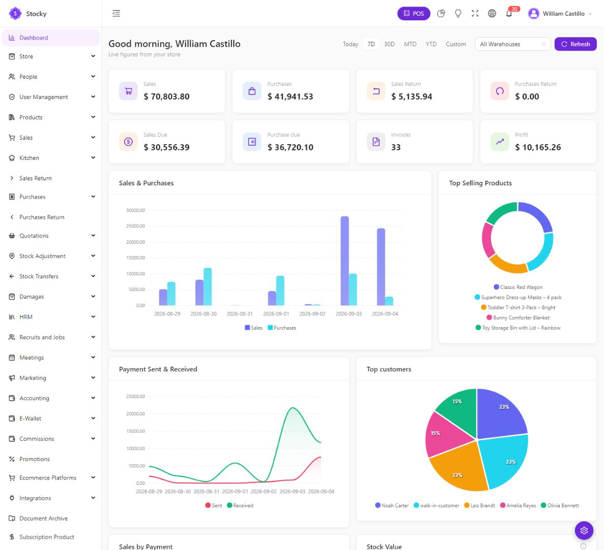
What is in the box
Point of sale
Touch-first register with barcode and camera scanning, hold and drafts, split payments, promotions, registers, receipts, a customer display and an offline queue.
Products & stock
Single, variable, service and combo products; multi-warehouse stock with rack locations; batches and expiry; serial numbers; adjustments, transfers, counts and damages.
Buying & selling
Sales, quotations, purchases, sale and purchase returns, shipments, a customer ledger and supplier history; PDF, email, SMS and print on every document.
Online store
Five themes on one catalogue, twelve payment gateways, shipping zones, coupons, flash sales, reviews, wishlists, returns and a customer account.
Customer portal
A separate login for business customers: invoices, payments, statement, quotations, appointments, contracts and a knowledge base.
Money
Cash accounts, deposits and expenses, plus double-entry accounting that posts itself: chart of accounts, journals, trial balance, P&L, balance sheet and tax summary.
HRM
Companies, departments, shifts, employees, attendance, leave and payroll; recruitment and meetings as separate modules.
Business modules
Projects, bookings, service jobs, subscriptions, manufacturing, assets, fleet, kitchen display, documents, contracts, marketing, hospital and school — each on a switch.
Integrations
WooCommerce, Shopify, Salla, Jumia, PrestaShop, QuickBooks, Xero, Google Sheets, Mailchimp, Slack, Telegram, Google Calendar, ZATCA and Stripe.
Reports
Sixty report screens with a date range, a warehouse filter and Excel or PDF export, plus analytics, a 3D sales dashboard and question-driven AI reports.
Platform
Roles with 300+ permissions, users scoped to warehouses, 24 languages with RTL, light and dark themes, installable PWAs, a browser installer and an in-panel updater.
Mobile
A Bearer-token API for the separately sold companion app, with branding and module switches in Settings → Mobile App.
How to read this guide
Sections follow the order you will actually need them: install it, set the business up,
then each module in the order the sidebar lists it. Every screen named here exists in the
product — where something is deliberately absent it is listed under
Deliberately not here rather than described as if it were built.
Paths such as Settings → POS Settings refer to the sidebar; the address bar
shows the same page under /next/….
The shape of every screen
Lists work the same way throughout: a search box and filters at the top of the card, a table, paging at the bottom, and export buttons where a list is worth exporting. Record pages open with a header — the reference, the status pills, the buttons that change its state — and then the detail. The POS is the exception: it is a full-screen application of its own, opened from the purple POS button in the header.
Server requirements
Stocky runs on ordinary PHP hosting. There is no Docker, no Node on the server and nothing to compile — the front-end assets ship already built. Cron and a queue worker are optional; see Cron & queue for what they add.
| What | Needs | Notes |
|---|---|---|
| PHP | 8.2 or newer | 8.2, 8.3 and 8.4 all work. The installer shows the version it found. |
| Database | MySQL 8.0+ or MariaDB 10.6+ | Create an empty database first; the installer fills it. |
| Extensions | openssl, pdo, pdo_mysql, mbstring, curl, tokenizer, xml, ctype, fileinfo, gd, json, bcmath, zip | All standard. The installer checks each one and names the missing ones. |
| Web server | Apache with mod_rewrite, or Nginx | Point the domain at public/. The shipped .htaccess handles the rewrites. |
| Writable | .env, storage/, bootstrap/cache/, public/images/ | Usually 755 on folders, 644 on files. Product images and uploads land in public/images. |
| HTTPS | Required for the camera scanner and PWA install | Browsers only expose the camera and the install prompt on secure origins. Everything else works over plain HTTP. |
| Memory | 256 MB PHP memory_limit recommended | Large imports and PDF exports are the hungry operations. |
Point the domain at public/, not at the folder above it.
If the document root is the project folder, anyone can download your .env —
which holds the database password and the application key. On cPanel this is
Domains → Document Root. If your host truly will not allow it, the shipped
.htaccess and server.php in the project root rewrite requests
into public/; still prefer the proper document root.
Optional hardware
Nothing is bundled and nothing is proprietary. A USB or Bluetooth barcode scanner behaves as a keyboard and needs no driver. A phone or tablet camera scans in the browser. Thermal receipt printers print through the browser dialog, silently through QZ Tray on the cashier's computer, or directly to a network printer by IP address. Cash drawers kick through the receipt printer. Label printers take the barcode sheets. Digital scales that print weight-embedded barcodes are read as product plus kilograms.
Installing
Stocky installs itself in a browser. You do not need shell access, phpMyAdmin or a command line.
-
Upload and unzip
Put the contents of the ZIP on your server and point the domain at the
public/folder. Everything is included — you do not need to runcomposer installornpm. -
Open
/setupBrowse to
https://your-domain/setup. You land on the requirements check. Every card must be green — the PHP version, the twelve extensions and the ZipArchive class. If one is not, enable it on the server and press Re-check requirements. Nothing has been written yet.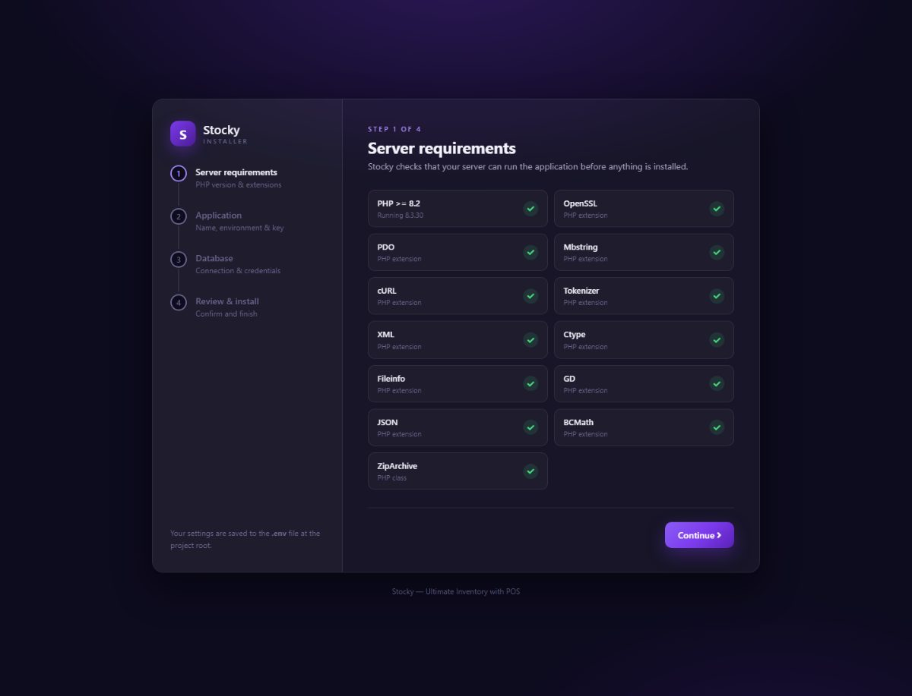
Step 1 of 4. Each requirement is checked on your server and named if it is missing. -
Application settings
The application name, the environment (Production for a live shop), debug mode (Off on a live server), an application key — press Generate — and the application URL, exactly as people will type it, with
https://. All of this lands in.envand can be edited there later.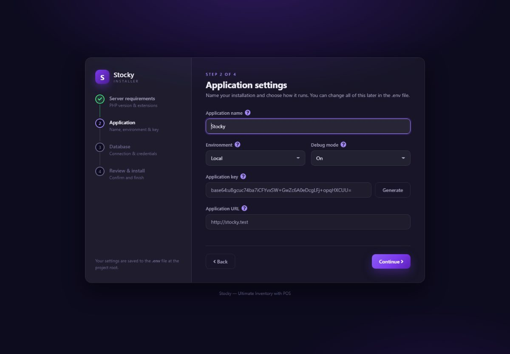
Step 2 of 4. Name, environment, debug mode, key and URL. -
Database
Host, port, database name, username and password for an empty MySQL database. Press Test connection; the Continue button only appears once the test passes.
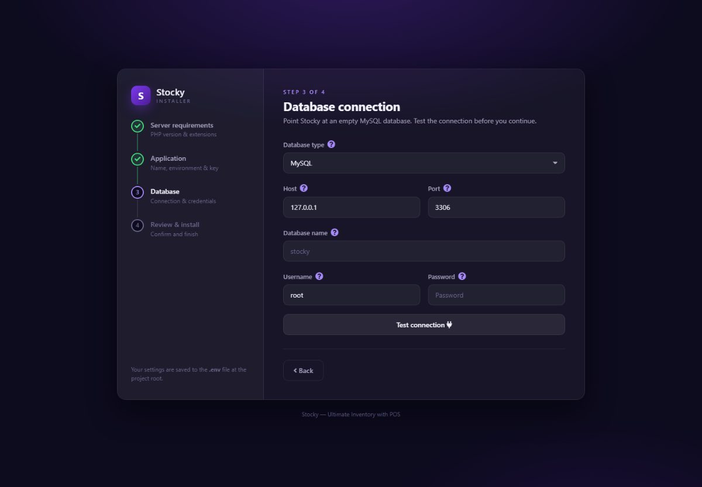
Step 3 of 4. Test the connection before you continue. -
Review and install
Check the summary, then press Install Stocky. This writes
.env, creates every table, installs the API keys and seeds the reference data: the Owner role, the permissions, the default warehouse, currencies, payment methods, settings and the translations for all 24 languages. Keep the tab open; it can take a few minutes on slow hosting. -
Sign in
The finish page shows the default administrator:
admin@example.comwith the password123456. Press Go to login.
Change the administrator password right after your first login. It is printed in this guide and on the installer's finish page. Open the user menu (top right) → Profile, or edit the account under User Management → Users — change the email as well.
The installer seals itself. Once it finishes, every
/setup address answers 403. The seal is a file:
storage/app/public/installed. Delete it to open the wizard again on a broken
install — and if /setup is ever reachable when it should not be, that file is
the first thing to check.
If the install fails
| Message mentions | What to do |
|---|---|
| Access denied for user | Wrong database username or password. Go back a step and re-test. |
| Unknown database | The database does not exist. Create an empty one in your hosting panel and use that name. |
| Permission denied / failed to open stream | .env, storage/ or bootstrap/cache/ is not writable. Set folders to 755 and files to 644, owned by the web server user. |
| Maximum execution time | Raise max_execution_time to 300 for the install, or run the command-line install. |
| Base table already exists | A previous attempt got half-way. Drop the tables (or the database) and run the installer again. |
| A blank page or 500 after Install Stocky | Turn debug mode on in .env (APP_DEBUG=true) to see the reason, or read storage/logs/laravel.log. Turn it off again afterwards. |
Your first hour
A fresh install already knows the shape of a shop — it has a default warehouse, a walk-in customer, a set of payment methods and a currency. This is the shortest route from there to a counter that sells.
-
Company details
Settings → System Settings. Company name, logo, phone, email and address print on every receipt and invoice. Set the default currency, the timezone, the date and price formats, and the default warehouse and customer the POS opens with.
-
Warehouses
Settings → Warehouses. One is enough. Add one per shop, store-room or van if stock physically lives in different places — every stock figure is per warehouse, and users can be limited to the warehouses they may see.
-
Categories, brands and units
Products → Categories / Brand / Units. Short lists you edit rarely. Units can convert (a carton of 12 pieces); categories can carry an icon and an image for the POS tiles and the store.
-
Products
Products → Create product for a few, Import products for a spreadsheet. A product needs a name, a code, a category, a unit, a cost and a price; everything else — barcode symbology, tax, images, variants, stock alerts — can come later.
-
Opening stock
Products → Opening Stock imports a quantity per product per warehouse. Or receive your first purchase, which is the honest way to start a stock figure with a cost behind it.
-
Payment methods
Settings → Payment Methods. Cash, card, bank transfer and so on are seeded; hide the ones you do not take. Add a cash account under Accounting → List accounts if you want payments to land in named accounts.
-
The receipt
Settings → POS Receipt. Pick the paper width (58 or 80 mm), one of the five layouts, and what prints on it — the preview on the right is live. Settings → POS Settings holds the rest: auto-print, hold sales, the cash drawer and keyboard shortcuts.
-
Users
User Management → Group Permissions to create a Cashier role with only the POS and sales permissions, then Users to add each person with that role and the warehouses they may see.
-
Open the POS and sell something
Press the purple POS button in the header. Open the register with a float, pick the warehouse, tap or scan a product, Pay Now, cash, Complete Payment. The receipt prints; the stock moved.
Everything else — the online store, accounting, HRM, the marketplaces, the business modules — can wait. Turn off what you do not use in Settings → Modules so the sidebar shows only what your business runs.
Command-line install
If you have shell access and would rather not use the wizard:
cp .env.example .env # or write .env by hand: APP_URL, APP_KEY, DB_*
php artisan key:generate
php artisan migrate --force
php artisan passport:install # API keys for the mobile app and the session guard
php artisan db:seed --force # roles, permissions, warehouse, currencies, settings, translations
# tell the installer it has nothing left to do
echo 1 > storage/app/public/installedThe seeders create the Owner role and the admin@example.com /
123456 account. They are idempotent — running them twice does not duplicate
anything.
Demo catalogues
Four seeders fill the store with a themed catalogue, complete with pictures, so you can see a theme with real products before entering your own. Each one switches the store to its theme and is safe to run more than once:
php artisan db:seed --class=ElectronicsDemoSeeder
php artisan db:seed --class=ToysDemoSeeder
php artisan db:seed --class=GroceryDemoSeeder
php artisan db:seed --class=RealEstateDemoSeederFor a general set of customers, suppliers, products, sales, purchases, quotations and expenses without any theme, use the demo-data generator in Settings → System Settings — it works from the panel and needs no shell.
Demo data is a lot to delete afterwards. Seed it on a test install, not on the database you will trade with.
Around the screen
A few things sit outside the modules and are worth knowing before you start.
| Where | What it does |
|---|---|
| POS, the purple button in the header | Opens the register full-screen. It is its own application: the sidebar disappears and comes back when you leave. |
| Today's summary, the pie-chart icon | A drawer with today's sales, payments and stock alerts without leaving the page you are on. |
| Light / dark, the bulb | Flips the theme for your browser. The customiser (below) also offers auto, which follows the operating system. |
| Full screen | Hides the browser chrome for a till or a wall-mounted screen. |
| Language, the globe | Switches the whole panel to any language enabled in Settings → Languages. Arabic flips the layout right-to-left. |
| The bell | In-app notifications — stock alerts, new online orders, kitchen tickets, sync results — newest first, with the unread count on the badge. |
| The user menu | Your profile (name, email, password, avatar) and sign out. |
| The gear, bottom right | The appearance customiser: sidebar layout (default, large, flat or dark), theme mode and colours. Saved for your browser; it changes nothing for anybody else. |
| Install app | On HTTPS, an Install App button appears in the header and installs the admin as a PWA on a desktop or a phone. The POS, the store, the customer display and the portal each have their own manifest. |
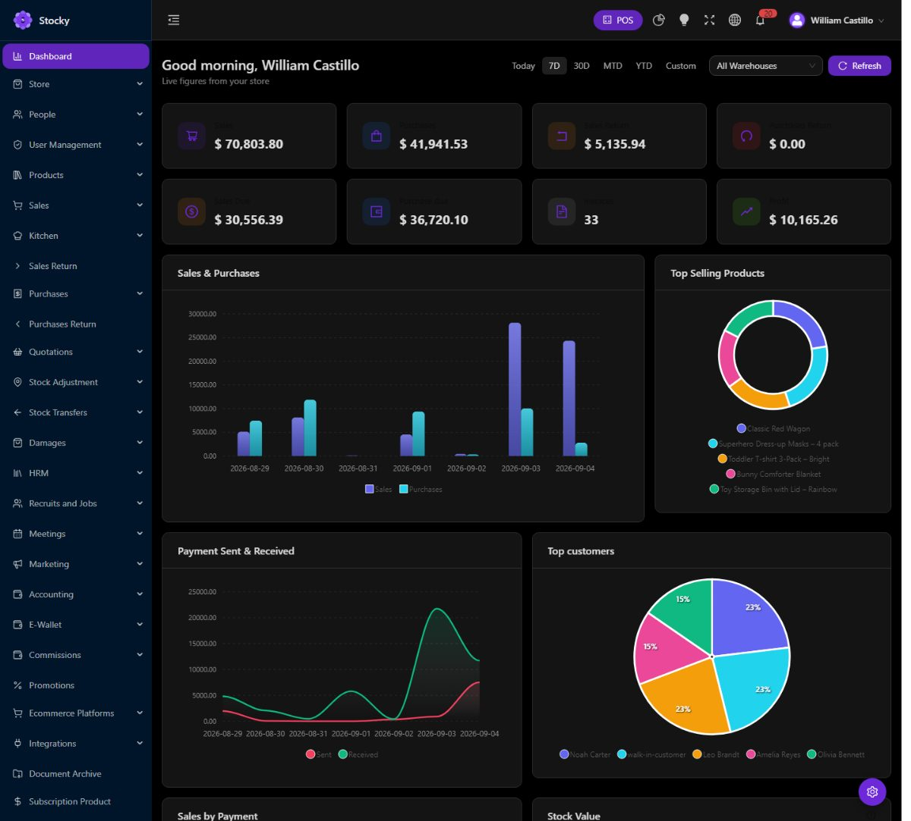
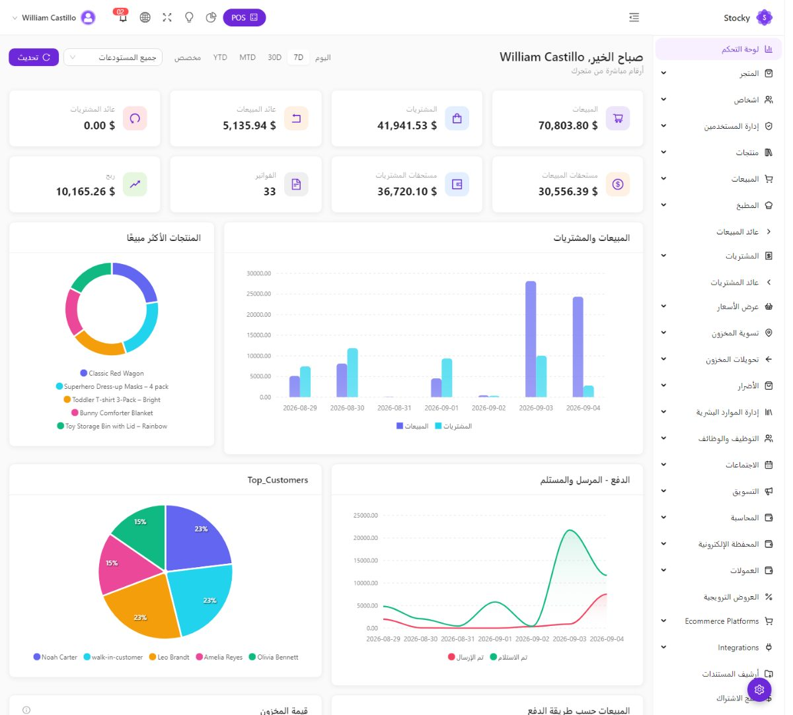
The sidebar shows only the modules that are switched on and only the pages your role may open. A cashier with POS-only permissions sees a very short sidebar; that is by design. The version number in the bottom corner is what Settings → Update compares against the update server.
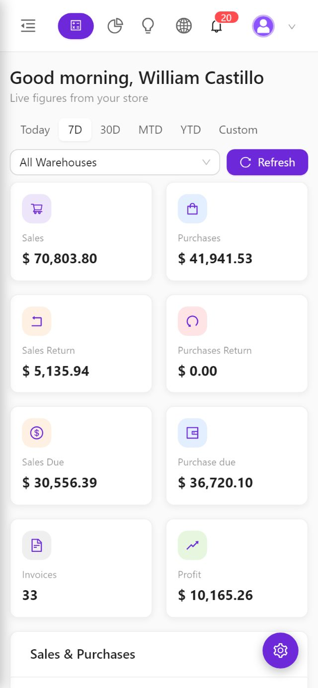
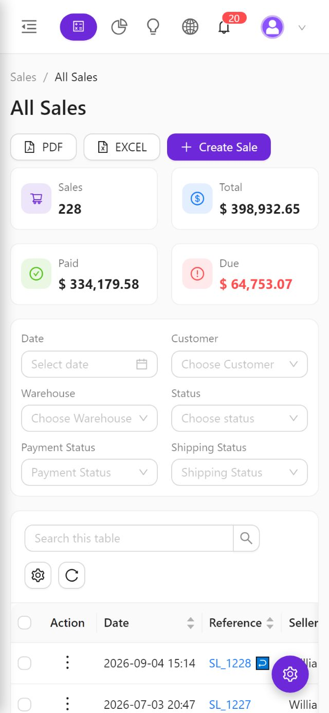
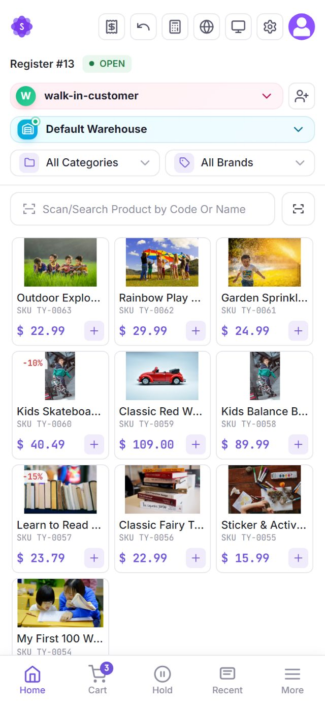
System settings
Settings → System Settings. The one page nearly every other screen reads from. It is split into tabs; each saves only its own fields.
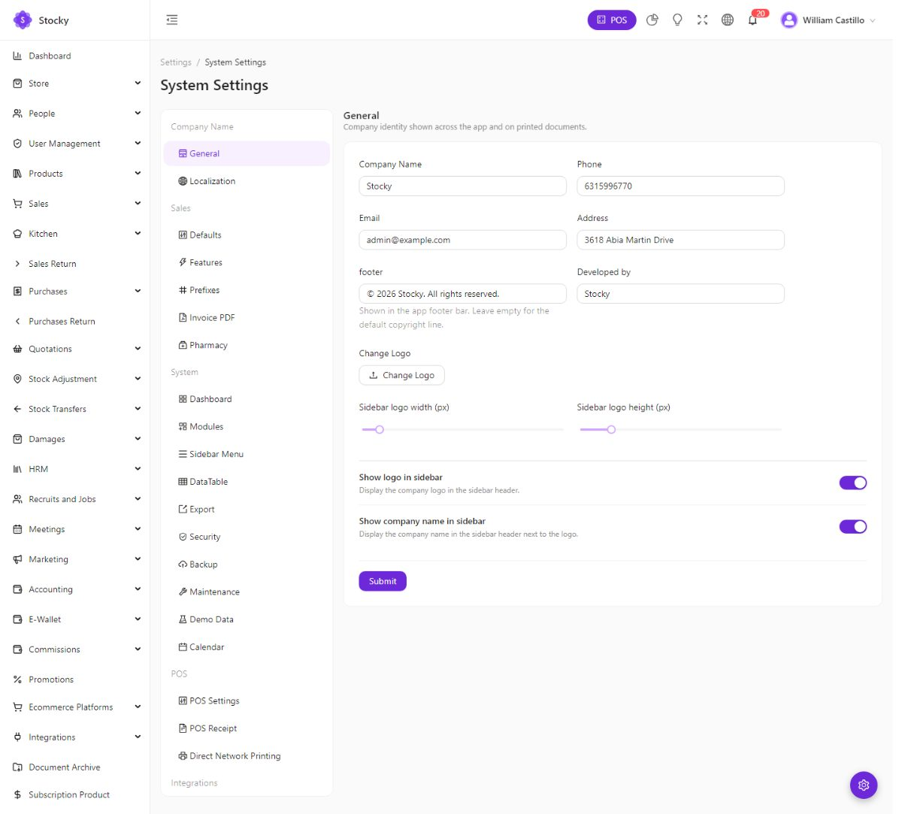
| Tab | What lives there |
|---|---|
| Company | Name, logo, phone, email and address. Sidebar logo size. The footer line and the developed by credit. |
| System | Default currency, default language, timezone, date format and price format. Default warehouse, default customer, default payment method, default account and default tax for new documents. The offline sync switch for the POS (see Offline mode). The default dashboard date range and widget order. |
| Sales | How sales documents behave: the sales agent field, credit limits, minimum prices and the loyalty point-to-amount rate. |
| Dashboard | Font family and size; table density, striped rows, cell borders, sortable columns and column visibility — the feel of every list. Which dashboard widgets show and in what order. |
| Export, Calendar | Defaults for Excel and PDF exports; Google Calendar credentials for the bookings module. |
| Features, Security, Backup | The feature switches, login-device rules and the cloud backup target (S3 or Google Drive) — the same forms as the dedicated pages under Settings. |
| POS Settings, POS Receipt, Payment Gateway, ZATCA | Shortcuts to those settings pages so the whole configuration is reachable from one place. |
| Demo data | The generator described under Command-line install: customers, suppliers, products, sales, purchases, quotations and expenses, with a status line showing what is already in the database. |
The timezone decides which day an evening sale belongs to and when the scheduled jobs run. The default currency is the base currency for every report and stock valuation — if you turn on multi-currency later, other currencies convert into this one. Set both before you trade.
Feature switches
Settings → Modules → Features (the same switches are on the Features tab of System Settings). These change how the whole system behaves, so they live together rather than hidden in the module they affect.
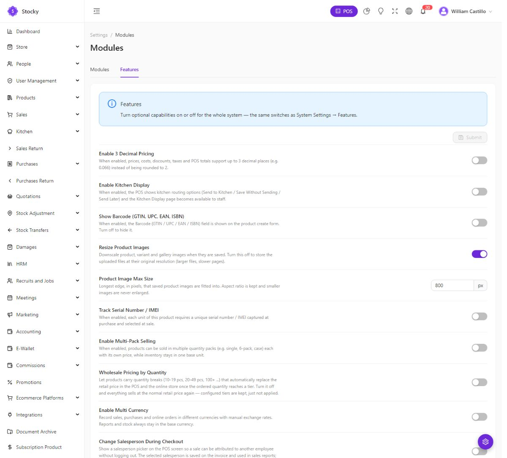
| Switch | What it does |
|---|---|
| 3-decimal pricing | Prices, costs, discounts, taxes and POS totals keep three decimals (0.066) instead of rounding to two. For currencies such as the dinar. |
| Kitchen display | The POS shows Send to Kitchen / Save without sending / Send later and the Kitchen Display page appears. Also sets the preparation-time target and whether confirmed store orders create a ticket automatically. |
| Show barcode (GTIN) | Shows the GTIN / UPC / EAN / ISBN field on the product form, separate from your own product code. |
| Resize product images | Downscales uploads to the max size (default 800 px on the longest edge). Turn off to keep originals — larger files, slower pages. |
| Serial number / IMEI tracking | Lets a product require a unique serial per unit, captured at purchase and picked at sale. See Serial numbers. |
| Multi-pack selling | A product can be sold as single, 6-pack or case, each with its own price, while stock stays in one base unit. |
| Wholesale pricing by quantity | Products carry quantity breaks (10–19, 20–49, 100+) that replace the retail price in the POS and the store once the ordered quantity reaches a tier. Turning it off keeps the tiers but stops applying them. |
| Multi-currency | Record sales, purchases and online orders in other currencies with manual exchange rates. Reports and stock stay in the base currency. See Multi-currency. |
| Change salesperson during checkout | A salesperson picker on the POS so a sale can be credited to another employee without logging out; the choice is saved on the invoice and used in the seller report. |
| Auto journal entries | Post an accounting journal automatically when a sale, purchase, expense, return or payment is recorded. See Accounting. |
Business modules
Settings → Modules. Twenty-three optional modules, each with its own menu group, pages, permissions and reports. Switch off what your business does not do and the sidebar shrinks to match. Core commerce — products, sales, purchases, people, settings and reports — cannot be turned off.
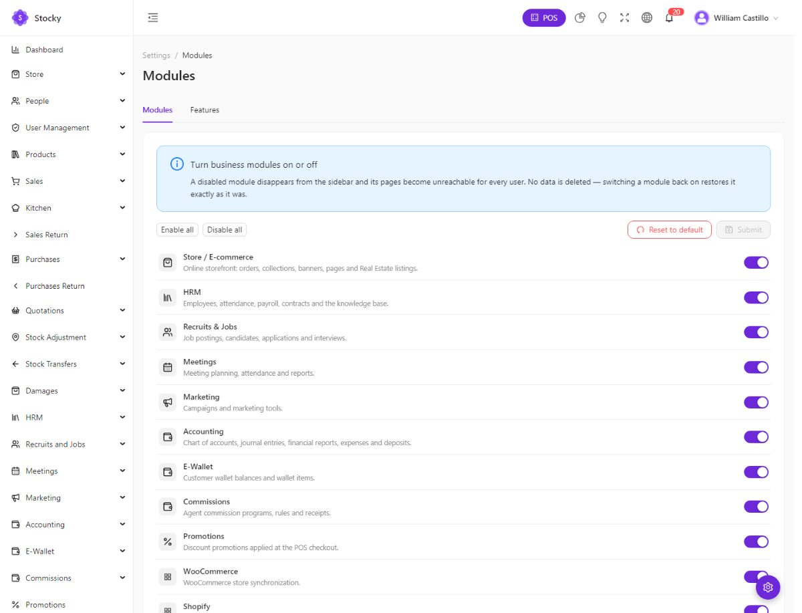
A module that is off is also off for the router: its pages answer not found even by direct address, and its permissions disappear from the role editor. Turning it back on restores everything — no data is deleted by the switch.
Settings → Module Settings is a different page: it lists add-on modules installed as packages and offers Upload Module for a ZIP supplied by the vendor. A fresh install lists none.
Warehouses & locations
Settings → Warehouses. A warehouse is any place stock physically lives: a shop, a stockroom, a van, a market stall. Every stock quantity, every alert and every sale, purchase, transfer and adjustment is tied to one.
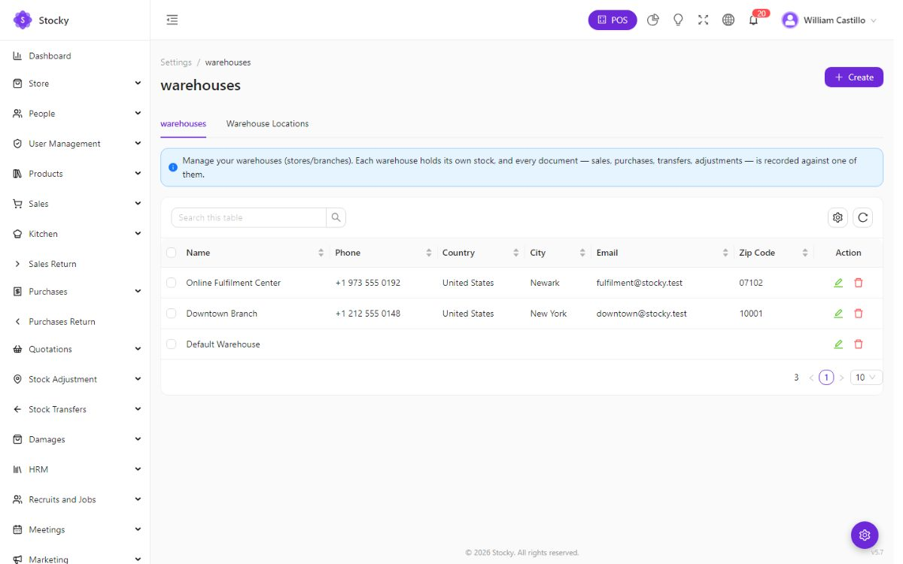
Internal locations
The Locations tab holds aisle, rack and bin positions inside a warehouse. Products can be assigned to a location so the picker knows where to walk; the Internal Location report lists what sits where.
Who sees which warehouse
Each user is assigned the warehouses they may work in (User Management → Users). The POS, the lists and the reports then only offer those. A cashier in the downtown shop never sees the airport store's stock; a manager assigned to all of them can switch. The default warehouse from System Settings is where the POS opens.
Users & roles
User Management → Users. A user is anyone who signs in to the admin or the POS. Each has a role, a status (inactive users cannot sign in but keep their history), an avatar and the warehouses they may see.
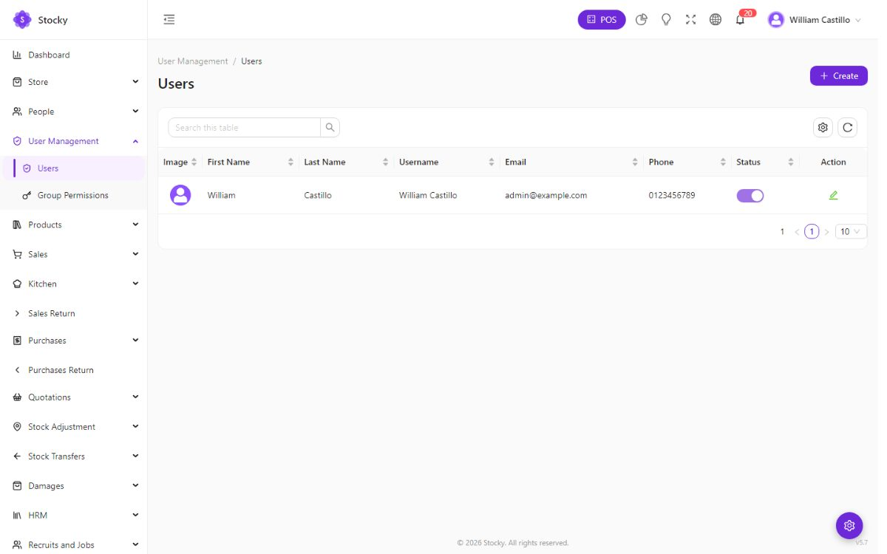
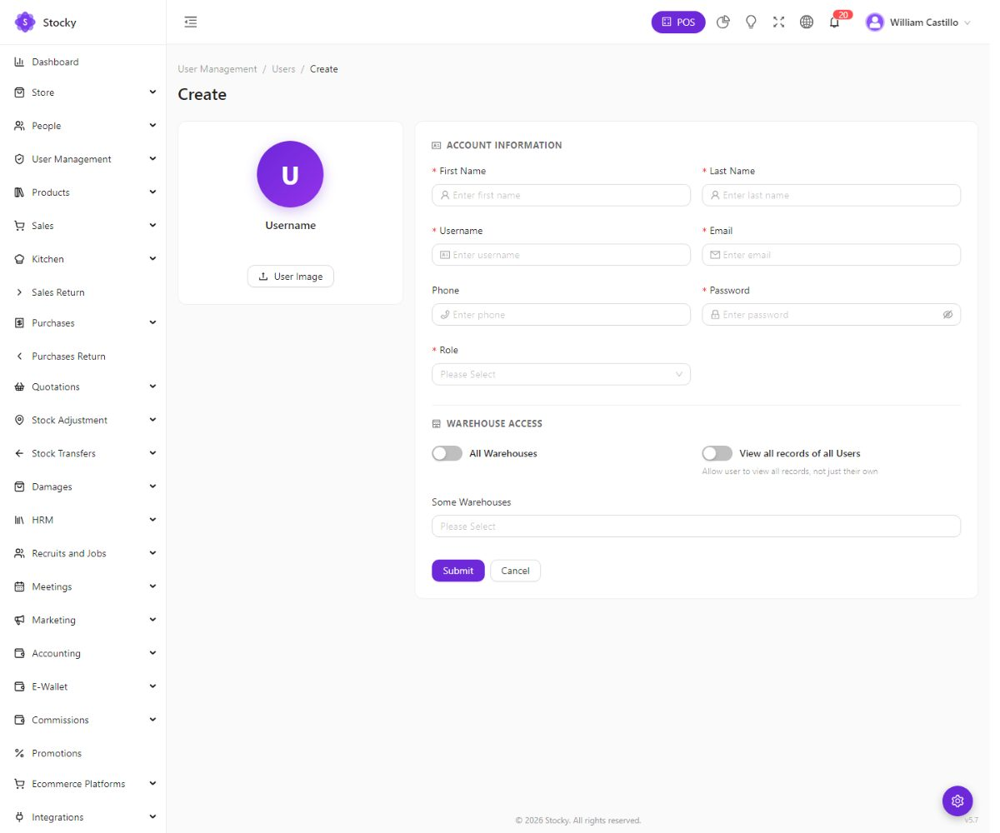
The install ships one role, Owner, which holds every permission — the administrator account has it. Create a role per job, not per person: Cashier, Stock keeper, Accountant, Store manager. Then give people the role.
Users can be signed out remotely from Settings → Login Devices, and every sign-in is listed in the Login Activity report.
Permissions
User Management → Group Permissions. A role is a named set of permissions. The editor lists more than 300 of them, grouped by module, with a search box and a select-all per group.
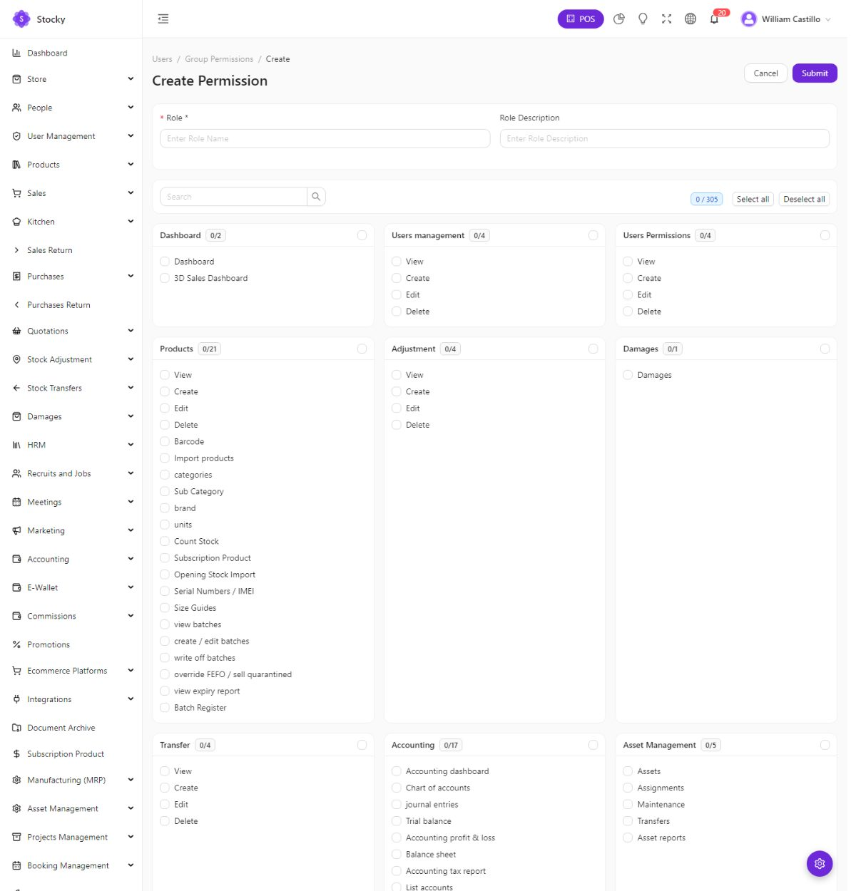
Most groups follow the same pattern — View, Create, Edit, Delete — with extras where a module has a sensitive action: override FEFO / sell quarantined under batches, write off, Pay due, report-level permissions, and the settings pages one by one, so a manager can be given POS Settings without Payment Gateway.
A cashier role
The minimum for somebody who only runs the till: POS, Sales → View and Create, Customers → View and Create (for quick-add at the counter), and nothing under Settings, Purchases or Reports. Add Sales → Edit only if they should be able to change a completed sale, and Cash Register Report if they close their own drawer.
Permissions apply to the API as well as the menu. A page hidden from the sidebar is also refused when typed into the address bar, and the mobile app sees the same set.
Categories, brands, units & currencies
Short reference lists under Products and Settings. Get them roughly right before importing products, because the import matches on their names.
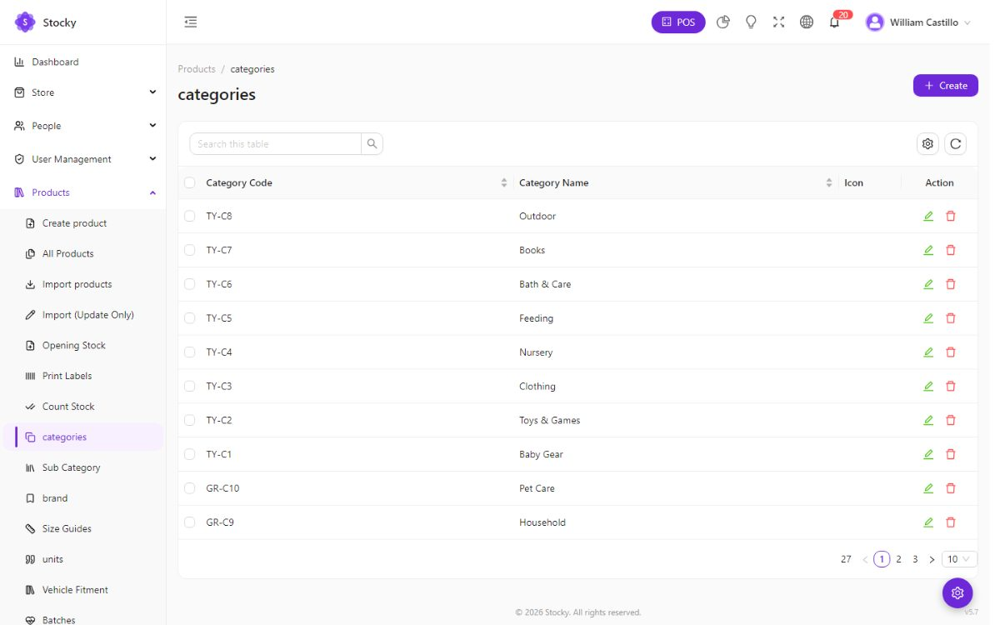
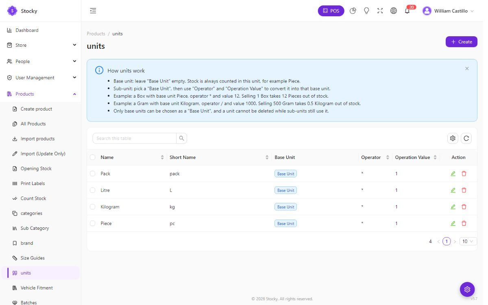
| List | Notes |
|---|---|
| Categories and Sub-categories | Two levels. The POS filters by category; the store builds its menus and filters from them; kitchen stations claim categories. |
| Brands | A name and a logo. The POS has a brand filter; the Electronics theme shows a brand row. |
| Units | A base unit (piece, kg, litre) and derived units with an operator and a value — a carton is × 12 pieces. Products have a stock unit, a purchase unit and a sale unit, so you can buy by the carton and sell by the piece. |
| Size guides | Tables (S/M/L with measurements) attached to products and shown on the store's product page. |
| Vehicle fitment | Makes, models and years a part fits. The store lets a shopper pick their vehicle and filters the catalogue to what fits. |
| Currencies (Settings → Currencies) | Code, symbol and — with multi-currency on — an exchange rate against the base currency. The store's currency switcher offers whichever you enable. |
Payment methods & accounts
Settings → Payment Methods. The ways money arrives: the install seeds Cash, Credit Card, Check, TPE, Western Union, bank transfer and other. Rename, add or deactivate them; the POS payment screen and every payment form offer the active ones. Store credit and wallet are handled by the e-wallet module.
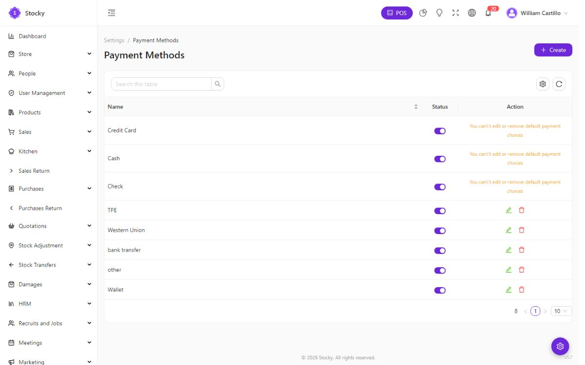
Accounts (Accounting → List accounts) are where the money is kept: the till, the bank account, the mobile-money float. Every payment, deposit and expense may name an account, and the account balance moves with it. The default account in System Settings is pre-selected on new payments. See Accounts, deposits & expenses.
Payment gateways are separate: Settings → Payment Gateway holds the Stripe keys the POS uses for card payments; the online store's twelve gateways are under Store → Payment Gateway.
Products
Products → All Products. The catalogue. One row per product with its image, code, category, brand, cost, price, unit and the stock across the warehouses you may see. The list filters by warehouse, category and brand, exports to Excel and PDF, and opens the Print Labels sheet for any selection.
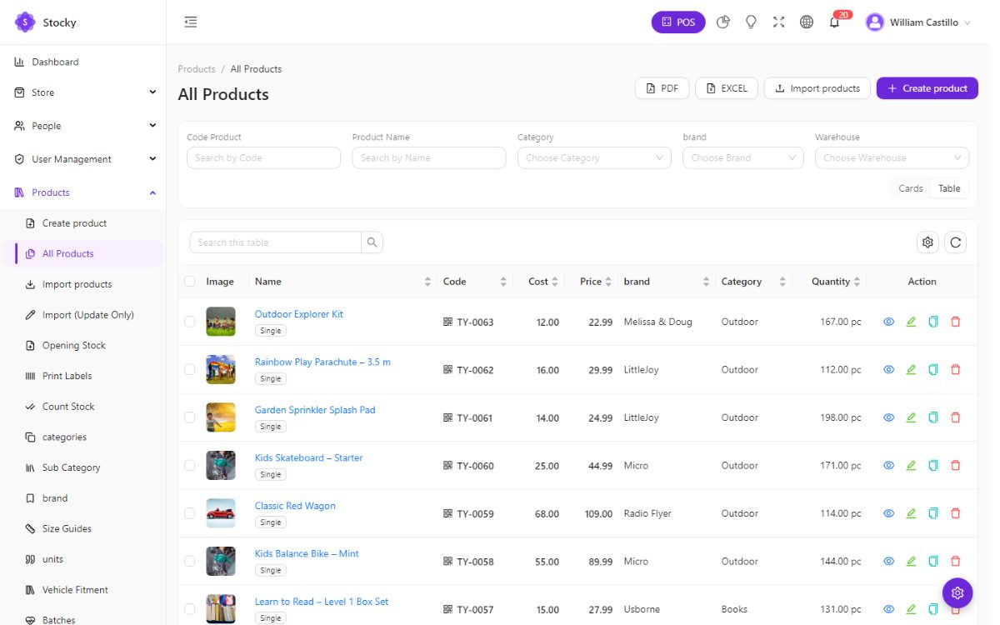
The product form
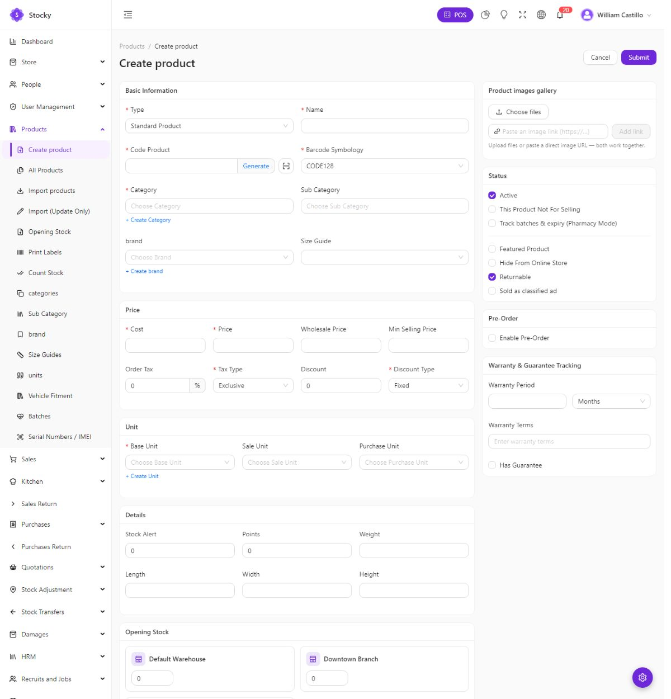
| Field group | What to put there |
|---|---|
| Identity | Name, code (generated if you leave it blank), barcode symbology (Code 128, EAN-13, UPC-A, …), optional GTIN, brand, category and sub-category. |
| Units | The stock unit, and optionally different purchase and sale units with a conversion. |
| Money | Cost, price, tax rate with inclusive or exclusive, and a default discount. With the wholesale switch on, a table of quantity tiers; with multi-pack on, the pack sizes and prices. |
| Stock | The stock alert quantity, opening stock per warehouse, an internal location, and whether the product tracks batches or serial numbers. |
| Media & text | Images (upload or paste a hosted URL), a note, a warranty period, a size guide, vehicle fitment, and any custom fields defined in Settings → Custom Fields. |
| Online store | Whether the product is visible in the store, the collections it belongs to, the storefront description and SEO text, pre-order and quote-request options. |
The product page
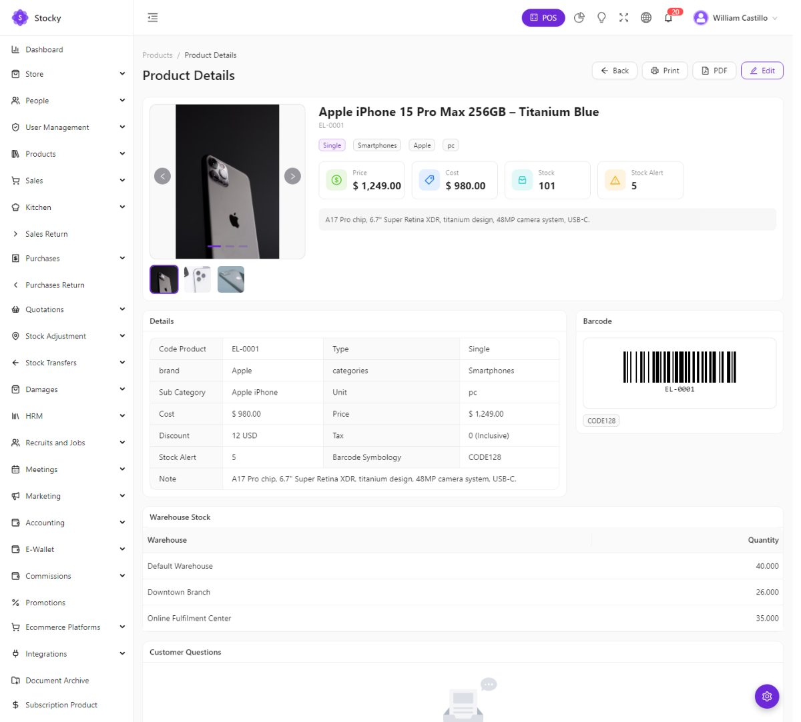
Every product has a detail page with its stock per warehouse, a movement history — every sale, purchase, return, transfer and adjustment that touched it, in order — and the sales and purchase lines it appeared on. The Product Report under Reports is the same view with a date range and export.
Variants, combos & services
The type at the top of the product form decides how stock behaves.
Single
One code, one price, one stock figure per warehouse. Most products.
Variable
A parent with variants — size, colour, capacity. Each variant has its own code, price, cost, image and stock. The POS and the store show the parent and let you pick the variant.
Service
No stock at all. Repairs, delivery, labour, consultations. Can carry a price and a tax like any product; the store can offer request a quote instead of a price.
Combo
A bundle sold as one line at one price. Selling it deducts each component's stock; the combo itself has none.
Subscription products (their own module, see Subscriptions) add a billing cycle to any product. Packs and wholesale tiers are pricing on top of a single or variable product, switched on under Feature switches.
Importing
Every import page has the same shape: a drop zone, a Download example button that gives you a template with the right columns, a table explaining each column and which are required, and Import now. Rows that fail are reported by line number; rows that pass are saved.
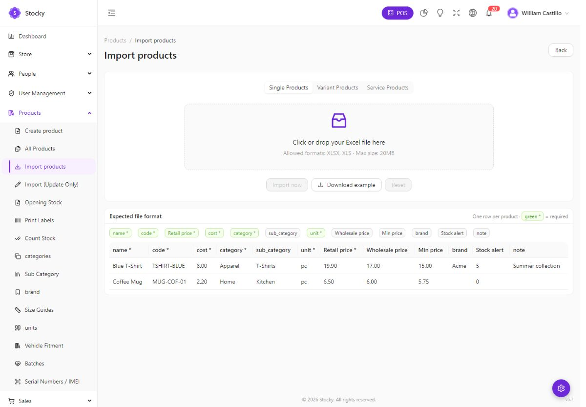
| Import | Where | Notes |
|---|---|---|
| Products | Products → Import products | Three tabs — single, variant and service products — each with its own template (.xlsx). Category, brand and unit are matched by name and created when missing. |
| Products, update only | Products → Import (Update Only) | Matches existing products by code and patches price, cost and stock. Never creates a product — safe for a supplier price list. |
| Opening stock | Products → Opening Stock | Code, warehouse and quantity, for single products and for variants. Recorded as an opening adjustment so the movement history starts cleanly. |
| Customers, suppliers | People → Import Customers / Import Suppliers | Name, email, phone, address, tax number, opening balance. |
| Sales, purchases | Sales → Import Sales, Purchases → Import Purchases | CSV with one row per line item; the reference groups rows into a document. For migrating history from another system. |
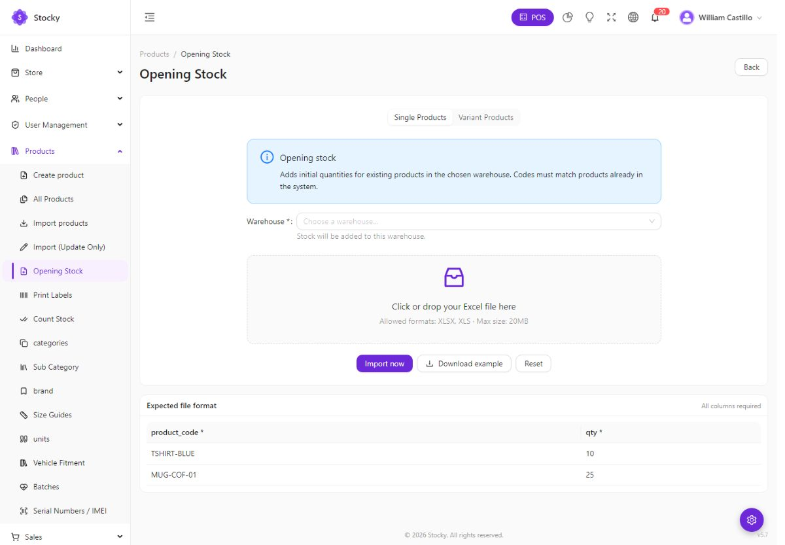
Import in this order: categories, brands and units by hand; then products; then opening stock; then customers and suppliers; then history if you want it. Product codes must be unique — a duplicate code is the most common rejected row.
Barcode labels
Products → Print Labels. Pick products (or a whole purchase), set a quantity per product, choose one of the five label templates and what prints on it — shop name, product name, price, barcode number — and print. The preview is true to size.
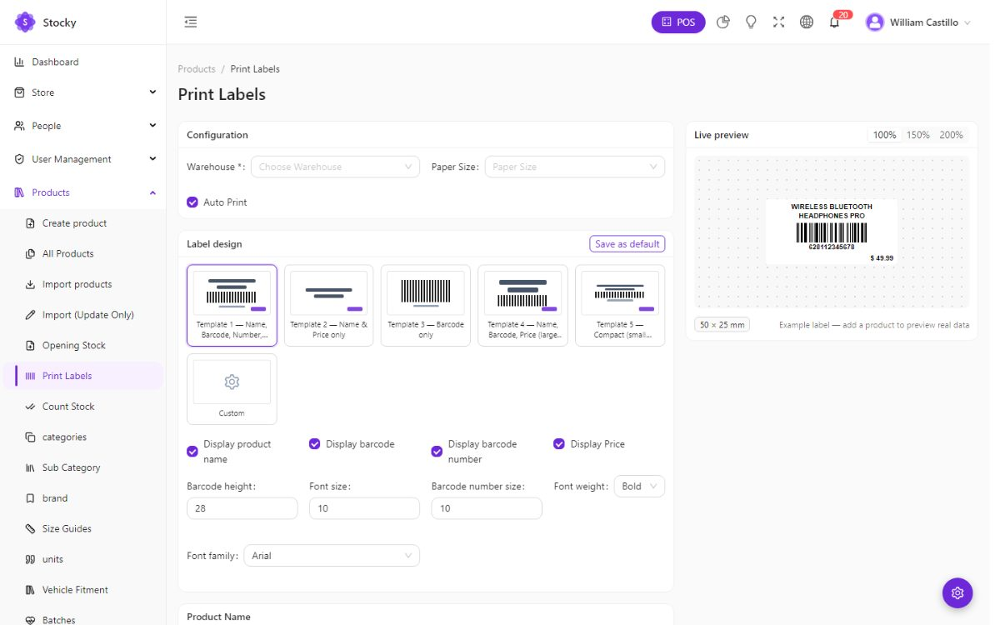
Labels go to a normal printer as a sheet, or directly — no print dialog — to a TSPL label printer over USB or the network. Products without a barcode of their own are printed with their product code, which the POS scanner reads just the same.
Batches & expiry
For food, pharmacy, cosmetics and anything with a shelf life. Turn batch tracking on per product; from then on every purchase line asks for a batch number and an expiry date, and stock is kept per batch.
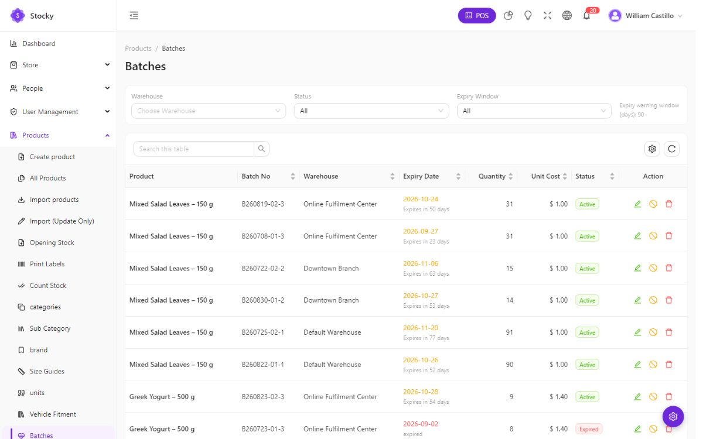
Sales allocate first-expiry-first-out: the POS takes from the batch that expires soonest. Expired or quarantined batches are skipped unless the user holds the override FEFO / sell quarantined permission. Batches can be written off, and the Expiry report lists what expires in the coming days by warehouse; the Batch Register and Batch History reports show where each batch went.
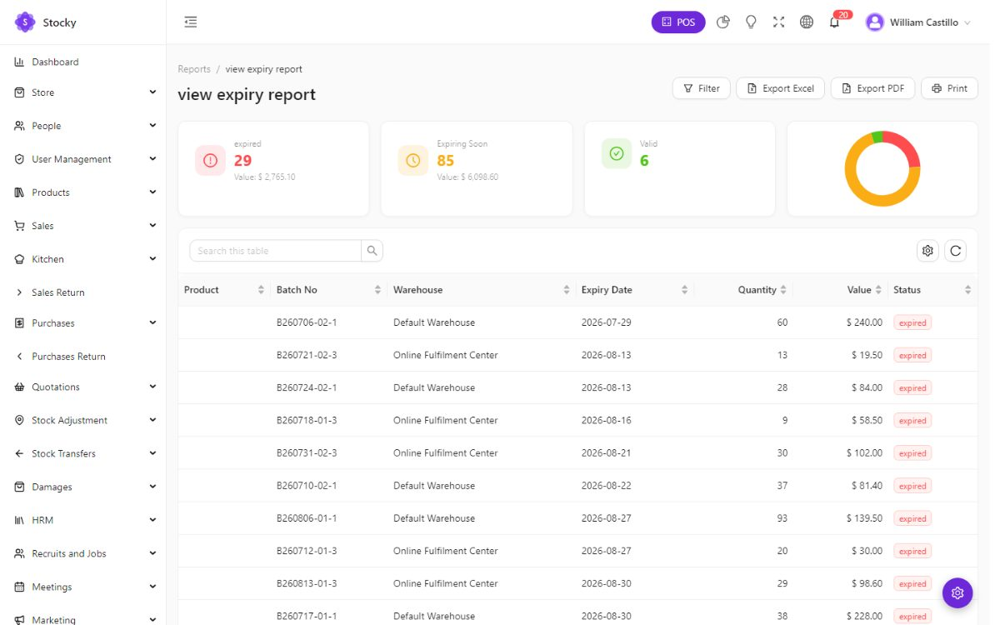
Serial numbers
With the Track serial number / IMEI switch on (Feature switches) a product can require one serial per unit. Receiving a purchase asks for the serials; selling asks you to pick which units leave; returns bring a specific unit back. Phones, laptops, appliances, tools with a warranty.
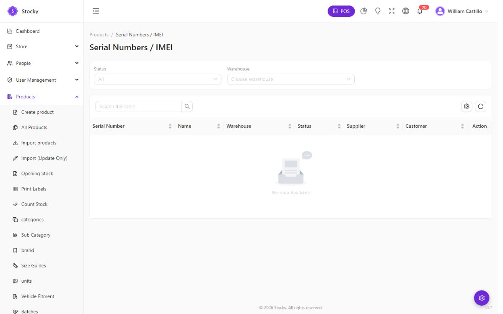
Four reports cover them: Available Serial Numbers, Sold Serial Numbers, Serial Movement Log and Product Serial Inventory. The Warranty & Guarantee report combines the serial with the product's warranty period to show what is still covered.
Count, adjust, transfer, damage
Four operations move stock without a sale or a purchase. Each is a document with a date, a warehouse, lines and a note, and each shows up in the product's movement history and in its own report.
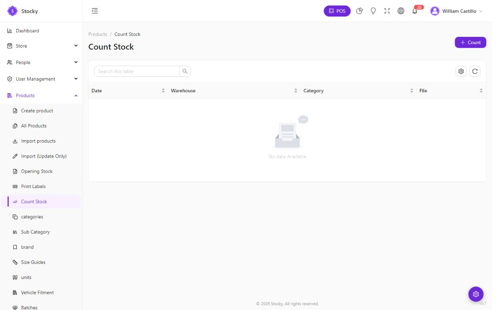
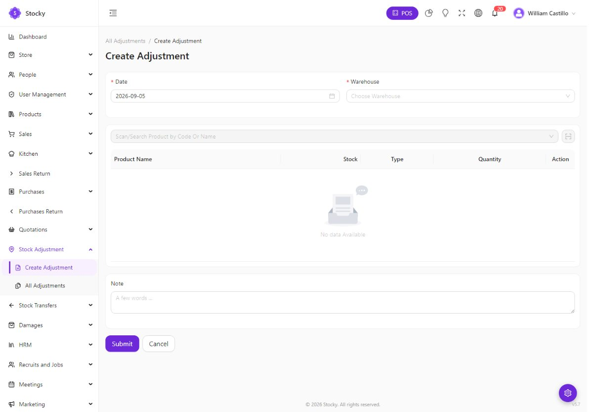
| Operation | Where | What it does |
|---|---|---|
| Count stock | Products → Count Stock | Generates a downloadable count sheet for a warehouse (and optionally a category) with the system quantity on a given date, to be counted on paper or a tablet. Enter the differences as an adjustment. |
| Adjustment | Stock Adjustment | Adds or subtracts a quantity per product with a reason: found, lost, sample, correction. The Stock Adjustment report totals them. |
| Transfer | Stock Transfers | Moves quantities from one warehouse to another, with a status (pending, sent, completed) and an optional shipping cost. Stock leaves the source at once and arrives when completed. |
| Damage | Damages | Writes off broken or unsellable units with a note and a value, so the loss is visible in the reports rather than hidden in an adjustment. |
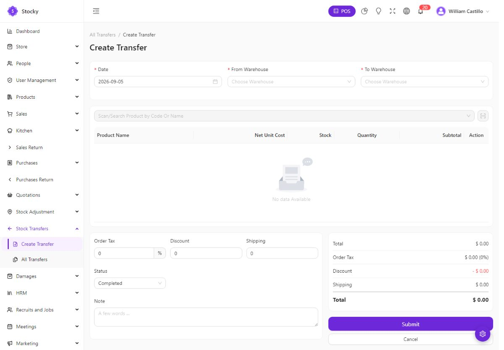
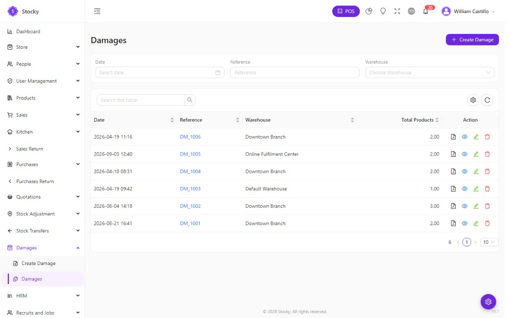
The Negative Stock, Quantity Alerts, Dead Stock, Zero Sales, Stock Aging and Inventory Valuation reports are the places to look for what needs counting, reordering or clearing.
The register
The purple POS button in the header opens the register full-screen. It is built for a touch screen and a scanner: large product tiles with image, code, stock and price; category and brand filters; a search box that also takes a scanner; and a cart on the left with a running total.
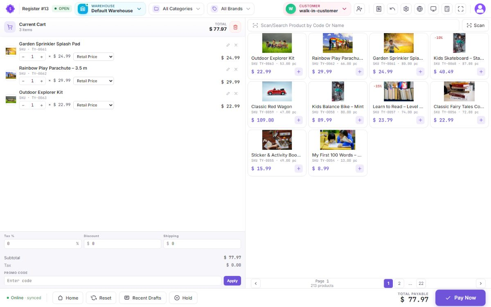
Opening the register
With registers enabled, the top-left pill reads CLOSED until you open one. Press it, enter the opening float, and the register is yours for the shift. Every sale, payment and hold is stamped with the register and the cashier. At the end of the shift press the pill again, enter the counted cash and a closing note, and the Cash Register report shows the float, the cash sales, the counted amount and the difference — per register and per cashier.
Warehouse and customer
The warehouse chip picks which stock you are selling from — the POS opens on the default warehouse from System Settings, limited to the warehouses your user may see. The customer chip defaults to walk-in-customer; search for a named customer to attach the sale to their ledger and their loyalty points, or press the person-plus icon to create one without leaving the screen.
Building the cart
- Tap a tile or scan a barcode. A USB or Bluetooth scanner types into the search box; the scan icon opens the phone or tablet camera as a scanner (HTTPS required). A weight-embedded barcode from a scale adds the product with the weight as the quantity.
- Variants ask which one; batch products allocate first-expiry-first-out; serial products ask you to pick the unit; packs ask single, 6-pack or case.
- Each line has a quantity, a unit, a per-line discount, a tax and a price level — Retail or Wholesale. With wholesale tiers on, the price drops itself when the quantity reaches a tier and the line says so.
- Below the lines: an order tax, an order discount, shipping, a promo code box and the promotions that apply.
- Hold parks the sale under a reference so you can serve the next person and recall it; Recent Drafts lists what is parked. Drafts survive a page reload and, with offline mode, a lost connection.
- A sale can also be saved as a quotation and turned into an invoice later.
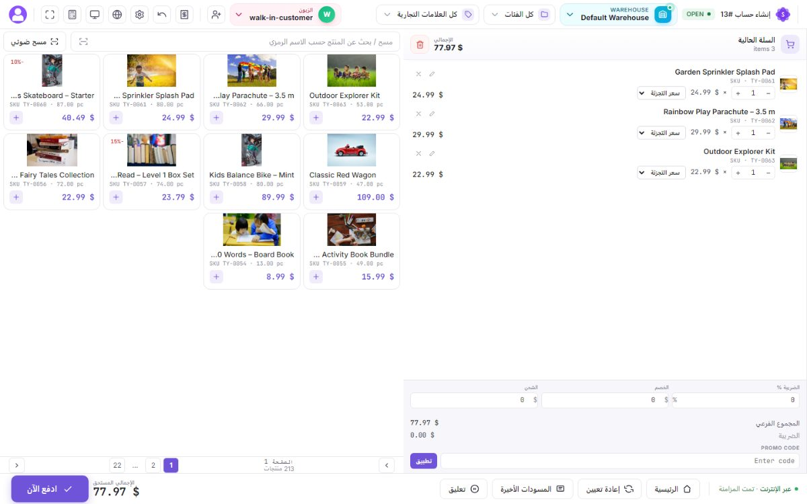
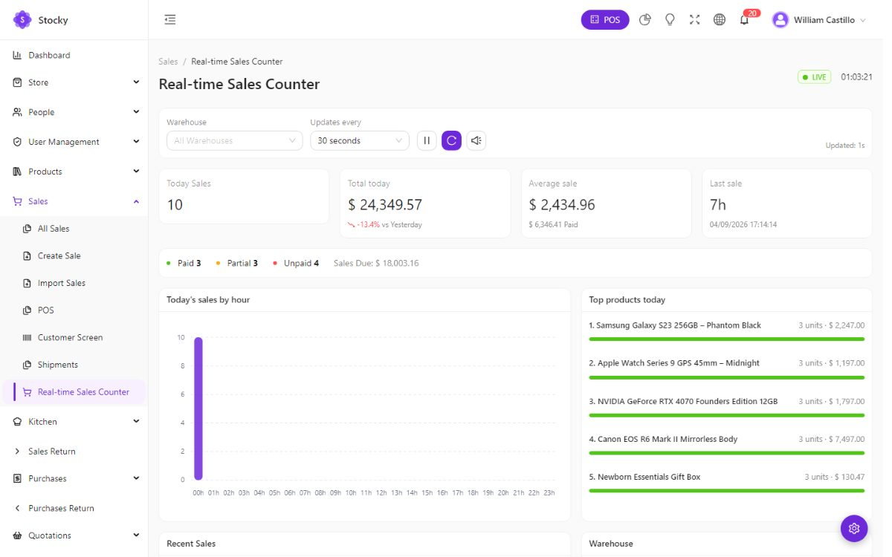
Live sales counter
Sales → Real-time Sales Counter is a board for a back-office screen: the count and value of today's sales, refreshed by polling every few seconds with a chime when a new sale arrives. It needs no websocket server.
Taking payment
Pay Now opens the payment screen. The total is pre-filled; pick a method and press Complete Payment, or split it.
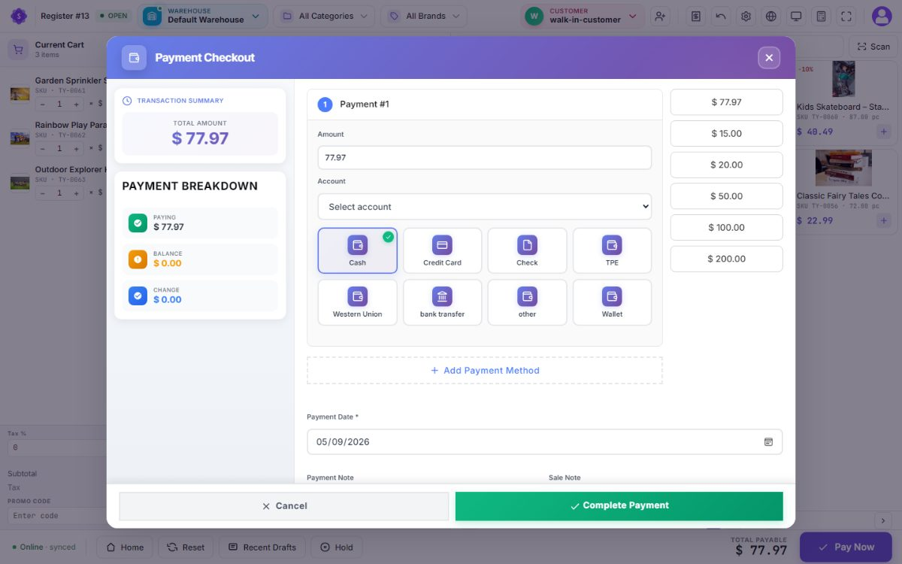
- Split payments. Add Payment Method adds a second line — part cash, part card, part bank transfer, part wallet. The breakdown on the left shows what is paid, the balance and the change.
- Quick cash. The buttons on the right enter the exact total or a round note; the change is computed.
- Partial payment and credit. Pay less than the total and the sale is saved as partial with a due balance on the customer's ledger. A customer with a credit limit cannot go past it. Pay due on the sales list settles it later.
- Store credit and wallet. With the e-wallet module, a customer's balance is a payment method.
- Loyalty points. A named customer's available points show on the screen; convert them into a discount, or redeem a reward from the loyalty catalogue. Points earned by the sale are credited when it completes.
- Card through Stripe. With keys in Settings → Payment Gateway, the card method charges through Stripe from the register; refunds sync back.
- Kitchen routing. With the kitchen display on, the sale can be sent to the kitchen, saved without sending, or sent later.
Completing the payment saves the sale, moves the stock, posts the journal (if auto journals are on), credits the loyalty points, prints the receipt (if auto-print is on) and, if a cash drawer is configured, kicks it open.
POS settings & receipts
Settings → POS Settings decides how the register behaves; Settings → POS Receipt decides what it prints.
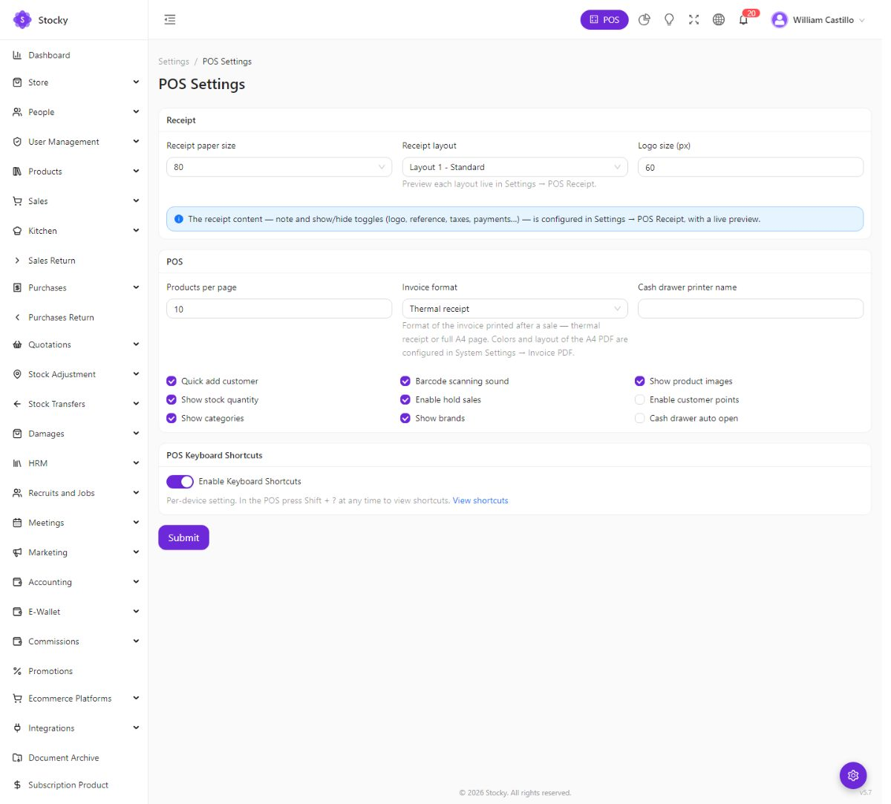
| Setting | What it does |
|---|---|
| Invoice format | Thermal prints the receipt layout on roll paper; A4 prints the full invoice. |
| Auto-print receipt | Prints as soon as a sale completes instead of waiting for the button. |
| Enable hold sales | Shows or hides the Hold button and the drafts list. |
| Cash drawer auto-open | When a sale completes with cash, sends an ESC/POS pulse to the receipt printer named here, which kicks the drawer connected to it. Requires QZ Tray running on the cashier's computer. |
| Direct network printing | Sends receipts straight to a printer at an IP address and port (usually 9100), bypassing the browser dialog. Good for a tablet till with a shared printer. |
| Barcode scanning sound | A beep on every successful scan. |
| Products per page, show categories | How many tiles load at once and whether the category filter appears. |
| Keyboard shortcuts | The switch and the cheat sheet — see Keyboard shortcuts. |
The receipt
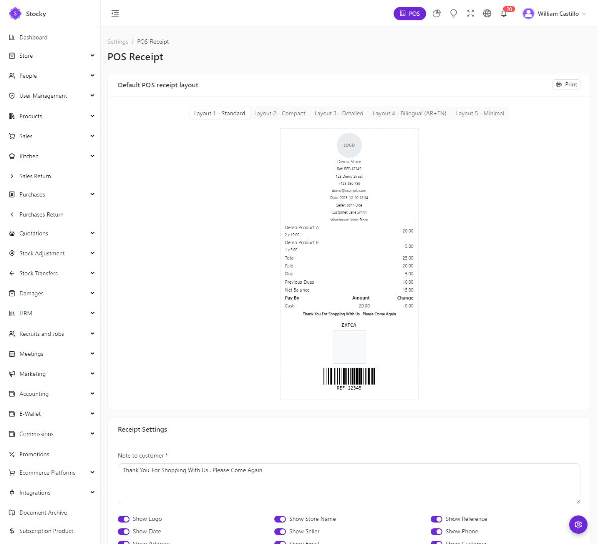
Paper size (58, 80 or 88 mm); one of five layouts — Standard, Compact, Detailed, Bilingual and Minimal; logo and its size; font family and size; and which blocks print: the customer, the tax breakdown, the previous dues and net balance, a note to the customer, and — with ZATCA phase 1 on — the QR code Saudi receipts require. The Bilingual layout prints each label in two languages, for Arabic and English receipts.
Printing
| Method | When to use it |
|---|---|
| Browser print | The default. Works with any printer the operating system knows; the dialog appears each time unless the browser is set to skip it. |
| QZ Tray | A small free program on the cashier's computer. Prints silently, raw ESC/POS, and kicks the drawer. Install it, allow the site once, and set the printer name in POS Settings. |
| Network printer | A receipt printer with an Ethernet or Wi-Fi port. The server sends the job directly; nothing to install on the till. The server must be able to reach the printer's IP. |
| Label printer | TSPL printers over USB or the network take the barcode sheets without a dialog. |
Keyboard shortcuts
Turn them on in Settings → POS Settings; the switch is per device and saves as soon as you flip it, so a touch till can leave them off while the counter PC has them on. Press Shift + ? on the register for the cheat sheet; the same list is under View Shortcuts in POS Settings.
The shortcuts cover what a cashier does a hundred times a day: focus the search or scan box, open the payment screen, complete a cash payment, hold the sale, open the drafts, clear the cart, change the customer, open the drawer and close the register. They are ignored while you are typing in a form field, except the function keys and Esc, so a barcode typed by a scanner is never misread as a command.
Offline mode
The register keeps selling when the internet does not. Switch it on with offline sync in Settings → System Settings → System.
-
The register caches
While online, the POS keeps a copy of the catalogue and the customers in the browser, and refreshes it as you work. The status pill bottom left reads Online · synced.
-
The connection drops
The pill turns red and reads Offline. Tiles, search, the cart, holds and drafts keep working from the cache. Sales you complete are queued in the browser with their payments, and the pill shows how many are waiting. Reloading the page while offline is fine — the register comes back from the cache.
-
It comes back
The queue uploads itself, oldest first; each sale gets its reference and moves the stock as if it had been taken online. The pill returns to Online · synced. If a queued sale is refused — a product deleted meanwhile, say — it stays in the queue with the error so nothing is silently lost.
What offline cannot do. Opening or closing the register, card payments through Stripe, kitchen tickets, customer-display updates and anything that needs the server to answer. Stock figures on the tiles are as of the last sync, so two offline tills can both sell the last unit. The queue lives in that browser's storage — do not clear site data while sales are waiting.
Customer display
A second screen facing the customer — a tablet on a stand, a monitor, an old phone — that mirrors the cart as the cashier works: the lines, the totals, and a thank-you when the sale completes. It is a web page, so any device with a browser on the same network will do.
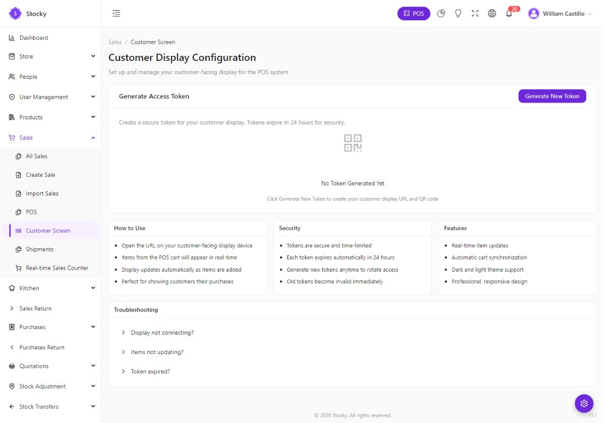
-
Generate a token
Sales → Customer Screen → Generate New Token. The page shows the display URL —
/customer-display?token=…— and a QR code for it. -
Open it on the display device
Scan the QR or type the URL. The page installs as a PWA and runs full-screen. It supports light and dark themes and needs no login — the token is the credential.
-
Sell
The display updates as items are added. Tokens expire after 24 hours; generate a new one to rotate access, and the old link stops working at once.
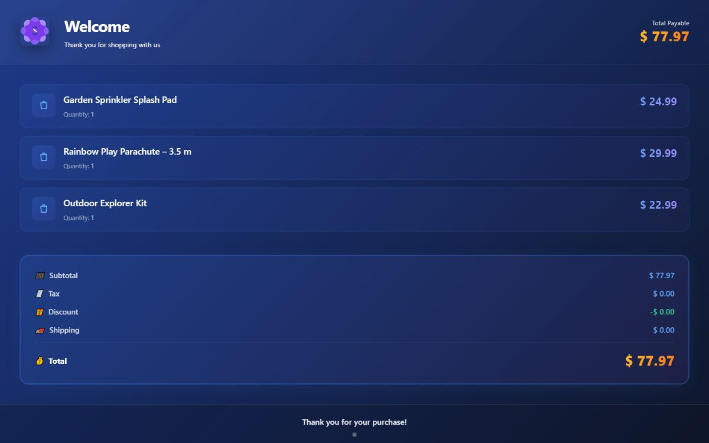
If the display does not connect, check that the device is on the same network and uses the full URL including the token. If items stop updating, make sure the POS is still open on the cashier's side — the display shows the last cart the register broadcast.
Kitchen display
For restaurants, cafés and anywhere an order is prepared after it is taken. Switch it on under Feature switches; the POS then offers Send to Kitchen on every sale and Kitchen → Kitchen Display appears in the sidebar.
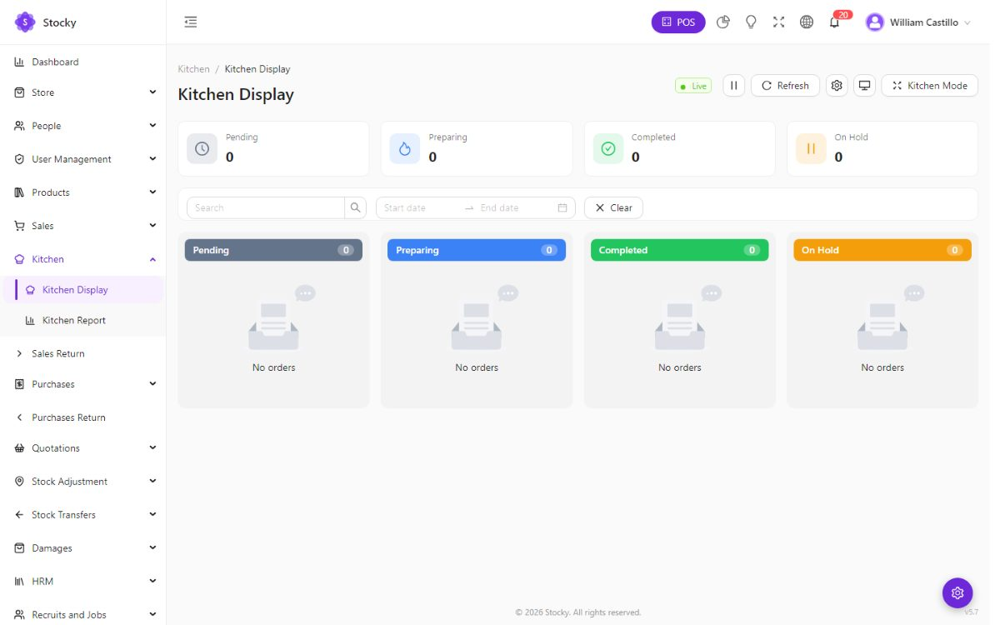
- Tickets carry a daily token number, the items with special instructions, the customer and the source (POS or online). Start preparation, check items off one by one — the ticket completes itself when the last one is done — Mark completed, with a ten-second Undo. A ticket whose sale was deleted shows Voided.
- Overdue colours. Set a preparation-time target in Features; tickets past half of it turn amber, past all of it turn red, pulse and jump to the top of their lane.
- Stations. Define stations by product category — grill, bar, dessert — and pin a screen to one; it shows only its items. Items in a category no station claims appear on every station, so nothing is missed. The All stations view is the expo screen with full tickets.
- Kitchen mode is full-screen for a wall-mounted TV; chits print at 72 mm, station-aware.
- Online orders can create a ticket automatically when confirmed.
The order-ready screen
A customer-facing board of token numbers under Preparing and Ready,
with a chime when one moves. Press Order Ready Screen on the kitchen
display to generate a secure link (/order-ready?token=…), open it on a screen
in the collection area, and it updates on its own. The link stays valid for seven days;
generating a new one replaces it.
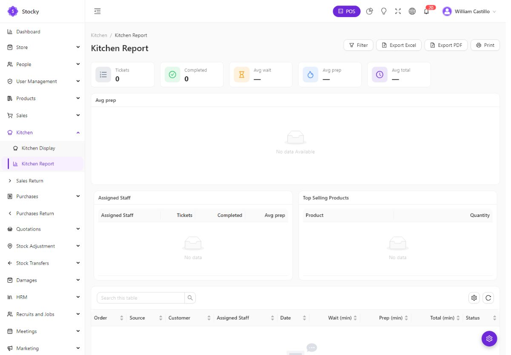
Sales
Sales → All Sales. Every invoice, from the POS or from the back office, in one list: date, reference, customer, warehouse, status, grand total, paid, due, payment status and shipping status. Filter by any of them, export, and act from the row — Pay due, print, PDF, email, SMS, edit, return, delete.
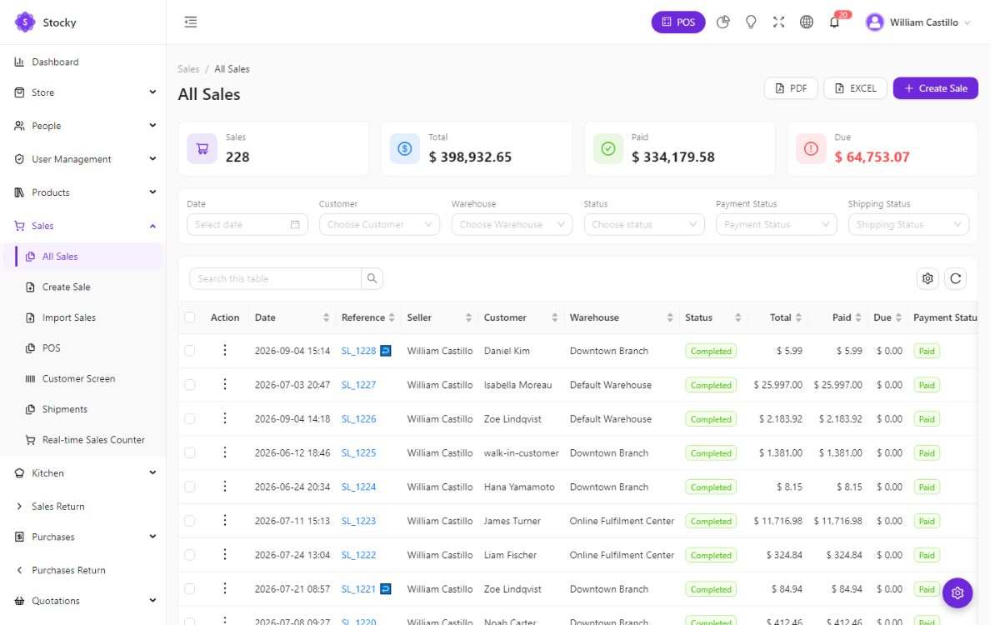
Creating a sale in the back office
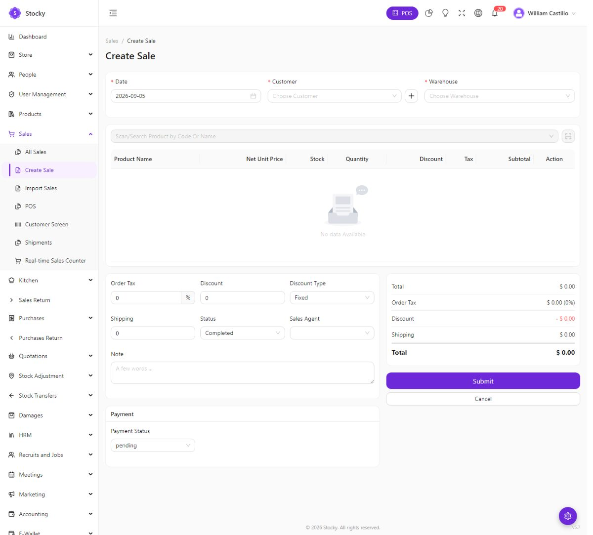
The form is the POS in a page: customer, warehouse, date, lines with discount, tax, unit and batch or serial, an order tax, discount and shipping, a status (pending, ordered, complete), a sales agent, a note, and a payment you can record at once. Stock moves when the sale is completed. With multi-currency on, pick the sale currency and the base-currency equivalent shows alongside.
The sale page
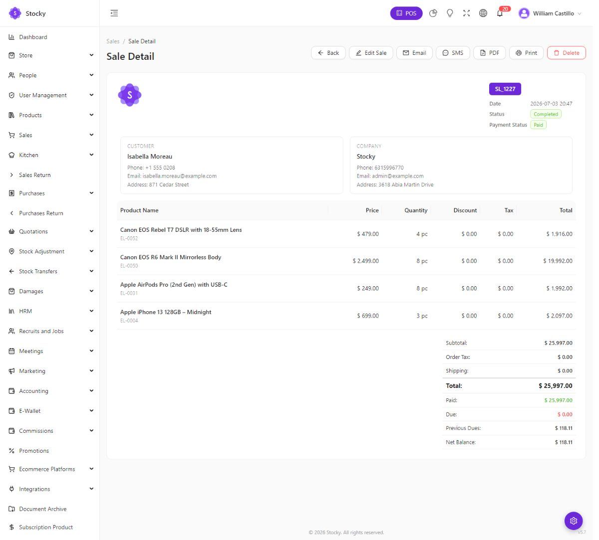
Payments are recorded against the sale with a date, a method and an account; each one updates the paid and due figures and the customer's ledger. Attach a file — a signed delivery note, a purchase order from the customer — under documents. Email and SMS use the templates from Settings, merged with the sale.
Quotations
Quotations. A priced offer that moves no stock. Same form as a sale; same lines; a status of pending or sent. Print or PDF it, email it, and when the customer agrees press Create sale — the quotation's lines become a sale in one click, and the quotation is marked as converted.
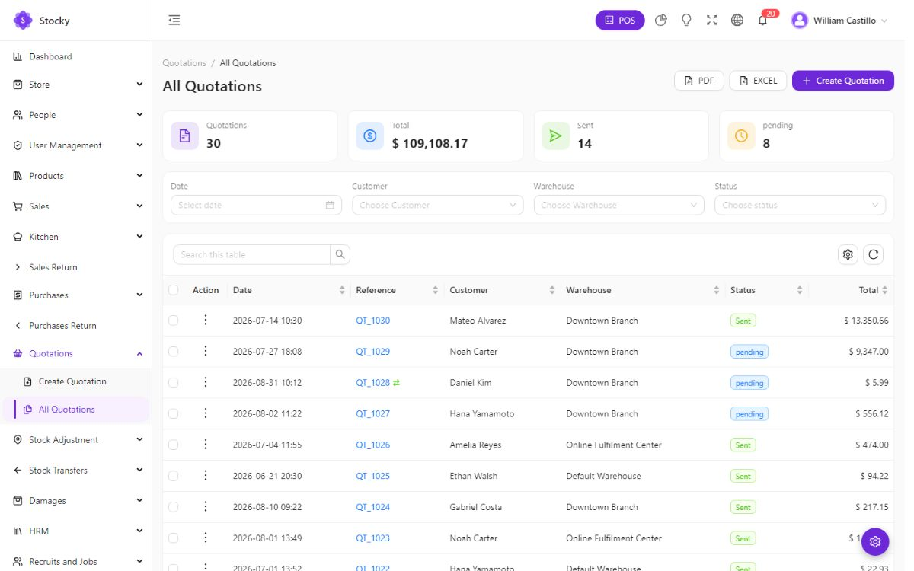
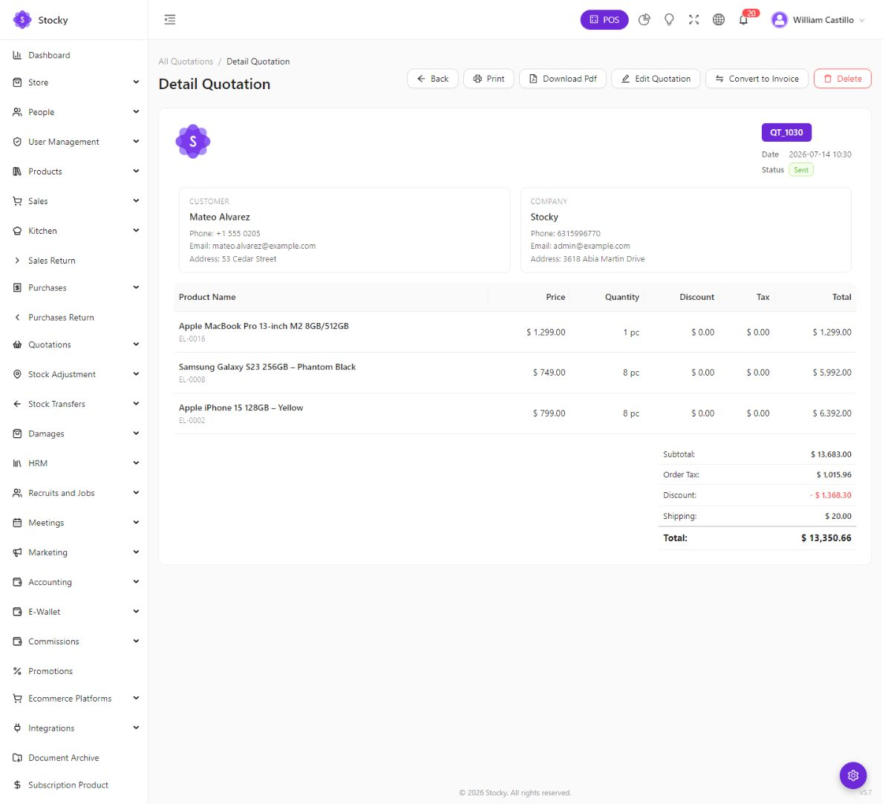
Business customers can also see their quotations in the client portal, accept them there, or request a new one; shoppers can send a quote request from the store for service products.
Returns
A return is always against an original document, so the stock, the money and the reports agree on what came back.
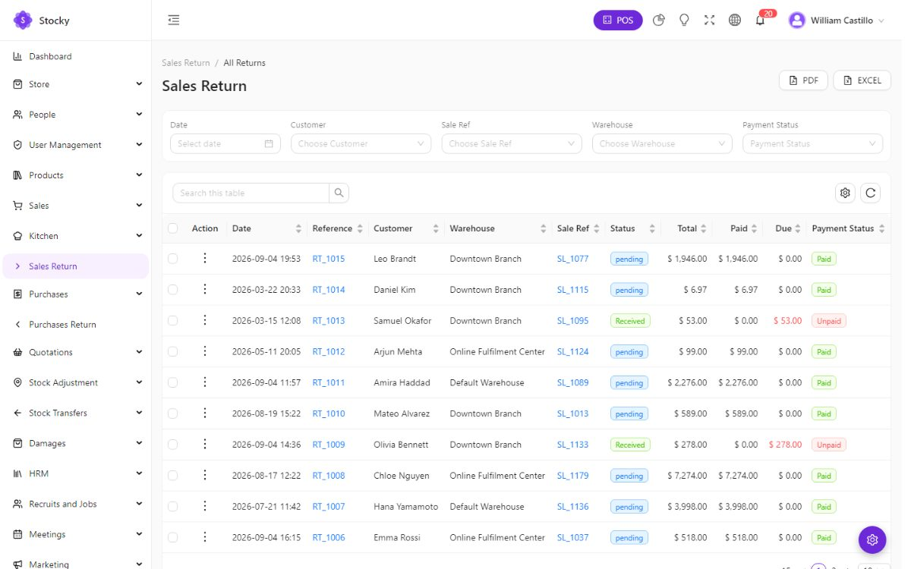
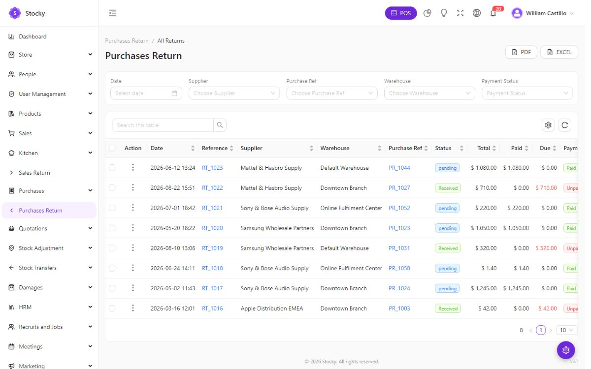
- Sale return — from the sale's row or page. Pick the lines and quantities coming back (a serial product asks which unit); stock returns to the warehouse; the refund is recorded as a payment on the return, by any method, or left as a credit on the customer's ledger.
- Purchase return — the mirror image, against a purchase, with the supplier's refund recorded the same way.
- Store returns — shoppers request a return from their account within the return window; you approve it under Store → Returns Requests and it becomes a sale return.
The Return Ratio report shows what comes back most, by product and by customer.
Shipments
Sales → Shipments. One shipment per sale that needs delivering: the carrier, a tracking number, the delivery address and a status — packed, shipped, delivered, cancelled. The shipping status shows on the sale and on the sales list, and the store's customer account shows it to the shopper.
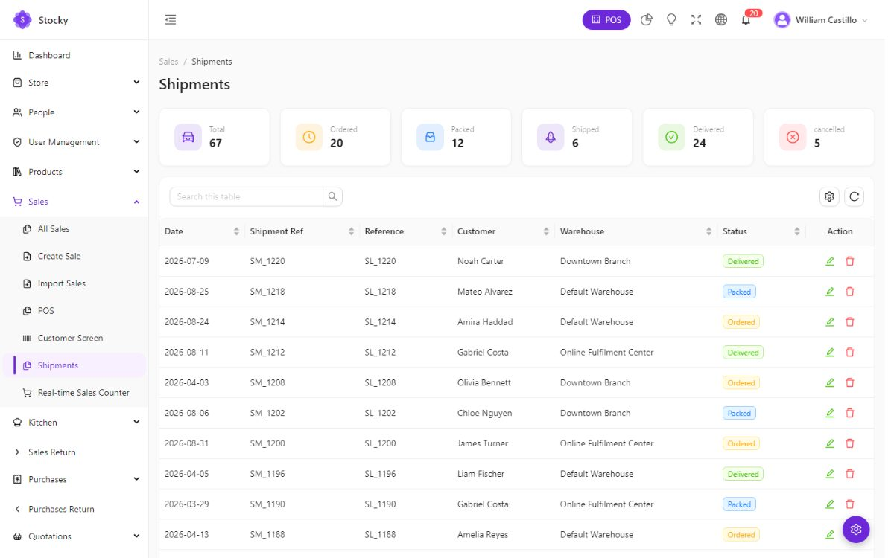
Suppliers & purchases
People → Suppliers holds who you buy from — name, contact, tax number, address, opening balance — with a detail page listing every purchase, return and payment. Purchases is how stock arrives with a cost behind it.
Receiving a purchase
Supplier, warehouse, date, lines with the unit cost, the purchase unit, a discount and a tax; per line a batch number and expiry for batch products and the serials for serial products; an order tax, discount and shipping. The status is pending, ordered or received — stock moves when it is received. Record the supplier payment at once or later from the row. A purchase can also open the label printer for everything it contains.
The product's cost is what you paid; Inventory Valuation uses it, and the profit reports subtract it from the sale price. Purchases can be imported from CSV to bring in history; see Importing.
Customers & ledger
People → Customers. Name, email, phone, address, tax number, an opening balance and a credit limit. The POS creates them on the spot; the store creates them when a shopper registers; the import brings them in bulk.
The ledger
Every invoice, return and payment for a customer on one statement, with the opening balance, the sales due, the returns due, the payments and the outstanding total. Download PDF produces the statement you send them. Pay due takes a payment against the oldest open invoices. The credit limit — No limit by default — stops the POS and the sale form from going past it.
Two further lists under People split customers by store access: Customers with Login can sign in to the online store; Customers without Login cannot. The Client Portal link under People opens the portal itself; access to it is granted per customer from this list.
Client portal
A separate front door at /portal for business customers — the ones who buy
on account, ask for quotations and want their statement without phoning. It is not the
online store: no cart, no checkout, no catalogue.
Inviting a customer
People → Customers. Open the row's actions and choose Portal Client. Confirm the email address the invitation goes to and press Enable: an email with a set-password link is sent, and until they use it the customer shows as invitation pending. Disable revokes access without deleting anything.
| Portal page | What the client can do |
|---|---|
| Dashboard | Outstanding balance, recent invoices and payments. |
| Invoices | Every sale, with status, paid and due, and a PDF of each. |
| Payments, Statement | Payments received and the running statement. |
| Quotations | Read the quotations you sent, and request a new one. |
| Appointments | Book an appointment (with the bookings module). |
| Contracts | Read their contracts and download attachments (with the contracts module). |
| Knowledge base | The articles you publish (with the knowledge-base module). |
| Profile | Change the password, switch language, or delete the account. |
Loyalty & promotions
Loyalty points
Settings → Loyalty Rewards. Customers earn points on what they spend at the rate you set (points per amount, a minimum sale, an expiry). Points show on the customer's page, on the POS when the customer is picked, and in the store account. They are spent two ways: converted into a discount at the point-to-amount rate, or redeemed for a reward from the catalogue on this page — a discount amount, a gift card or a product, each with a points cost, a stock and a per-customer limit. Redemptions are listed with their status and fulfilled from here; points can be credited or deducted by hand with a note.
Promotions
Promotions. Rules that apply themselves at the POS checkout: a percentage or a fixed amount off, on chosen products, categories or the whole cart, within a date range, optionally behind a promo code, with a usage limit. The register lists the promotions that matched; the Promotion Usage report shows what each one cost.
The online store has its own coupons and flash sales; they are separate from POS promotions on purpose, because a web coupon and a counter promotion rarely have the same rules.
E-wallet & commissions
E-wallet
E-Wallet. A prepaid balance per customer. Top it up in the admin or let shoppers do it in the store; spend it as a payment method at the POS and at checkout; refund to it instead of to cash. Wallet Items are the products or amounts on offer; the dashboard shows balances, top-ups and spend; the settings decide minimums and whether withdrawals are allowed.
Commissions
Commissions. For salespeople paid on what they sell. A program sets the rule — a percentage of the sale, of the profit, or a fixed amount per line — and which products it covers; agents are the users or employees in it; rules add tiers and exceptions. Every sale with a sales agent accrues, receipts record what was paid out, and the report reconciles the two.
Setting up the store
The online store sells the products you mark visible, from the warehouses you choose, with the same prices, stock and customers as the counter. It is switched on per install under Settings → Modules → Store, then configured from Store → Settings.
-
Basics
Store name, the theme, the warehouses it sells from (or all), the default language and the display currency. Online store enabled is the master switch; off, the storefront answers with a closed page.
-
Address
By default the store lives at
/online_store. Set a custom URL path such as/shop, or tick use the root domain so the shop is your home page and the admin stays at/loginand/next. On the root domain the shop's sign-in and register pages move under/customer/…. Old links are redirected. -
Stock behaviour
Show stock or not, hide out-of-stock products, allow or prevent overselling, hide prices for guests (a wholesale catalogue that shows prices only after sign-in).
-
Registration
Public registration on or off; require an invite code, admin approval, email verification, or any combination. See Customer accounts.
-
Returns and reviews
The return window in days, whether shoppers may cancel unshipped orders, and whether reviews publish at once or wait for moderation.
-
Make products visible
A product appears in the store only when its online store switch is on. Set it per product, or in bulk from the product list.
Real estate
With the Real Estate theme the store becomes a listings site: Store → Real Estate holds properties (for sale or rent, price, beds, baths, area, photos, map), their categories and the inquiries the form sends. Products and the cart are not used.
Themes
Five themes on one catalogue. Switching is a dropdown in Store → Settings → Basics; each theme has a tab of its own for the blocks it draws, and every theme shares the same product page, cart, checkout and account.
Each theme tab holds its own slides, tiles, banners, section headings, featured products per tab, deals and testimonials. What you fill in for Electronics is kept when you try Grocery, so switching back loses nothing. The demo seeders described under Command-line install fill each theme with a matching catalogue.
Collections, banners, pages & menus
Everything a shopper sees that is not a product is managed under Store.
| Page | What it is for |
|---|---|
| Collections | Named groups of products — New arrivals, Gifts under 20, Summer — with an image and a slug. The Default theme's home page is built from them; every theme offers them as a filter. |
| Banners | Images with a title, a link and a position for the hero and promo slots. |
| Pages | Static content — about, delivery, terms, privacy — with a rich-text editor and a slug at /pages/…. |
| Menus | The header and footer navigation: links to pages, collections, categories or any URL, in the order you drag them. |
| Popup messages | A one-time announcement or newsletter prompt, with a schedule. |
| Product reviews | Ratings and text left by verified buyers; approve, reply or hide. Auto-approval is a store setting. |
| Subscribers, Messages | Newsletter sign-ups from the footer form, and what the contact page sends. |
Shipping, tax & payment
Checkout quotes are computed on the server from these three lists, so the shopper's total is the same one that lands on the sale.
- Shipping zones group countries or regions; shipping methods belong to a zone and carry a price, a free-over threshold and a delivery estimate — Standard, Express, Pickup in store.
- Tax rates apply by zone at checkout; product-level tax from the catalogue still applies to the POS.
- Coupons are codes with a percentage or fixed value, a minimum order, a validity period and a usage limit. Flash sales put chosen products on a timed discount with a countdown on the store's flash-sales page.
Payment gateways
| Kind | Methods | Notes |
|---|---|---|
| Offline | Cash on delivery, cash on pickup, bank transfer, mobile money, GCash | No keys. Bank transfer lets the shopper upload a proof of payment; you confirm the order when the money arrives. |
| Card & wallet | Stripe, PayPal, Paystack, Flutterwave, Razorpay | Public and secret keys, an optional webhook secret, and a sandbox switch for testing. The order is marked paid when the gateway confirms. |
| Regional | bKash, SSLCommerz | Bangladesh. App key, secret, username and password (bKash); store ID and password (SSLCommerz). |
Orders & requests
Store → Online Orders. A web order is a sale with a source of online: it appears here and in Sales, moves stock from the store's warehouse, and can be shipped, returned and refunded like any other. Confirm it, set the shipping status, print the invoice; with the kitchen on, confirmed orders can become tickets.
| Page | What arrives there |
|---|---|
| Returns requests | A shopper's request to return or cancel, from their account, within the return window. Approve to create a sale return; refuse with a reason. |
| Quote requests | A shopper's request for a price on a service or quote-only product. Answer with a quotation. |
| Messages | The contact form. |
| Product reviews | Ratings awaiting moderation. |
| Pending customers | Registrations awaiting your approval, when approval is required. |
Customer accounts
A shopper can check out as a guest or with an account. The account is the same customer row the POS and the ledger use — sign in at the counter with the same email and the loyalty points are there.
Who may register
Store → Settings → Basics → Registration access control. Four switches that combine:
- Public registration — anyone may create an account. Off, only accounts you create in the admin can sign in.
- Require an invite code — codes you issue under Store → Invite Codes, each with a usage limit and an expiry. For a members-only or trade-only shop.
- Require admin approval — new accounts wait under Pending Customers until you approve them.
- Require email verification — a link is emailed and must be clicked before the first sign-in.
Sign-in, registration, password reset and verification pages live under the store's
address (/online_store/login, or /customer/login on the root
domain).
Branding, SEO & PWA
Store → Settings → Branding, Contact, SEO, Social. Logo and tagline, favicon, primary and secondary colours, font family, whether shoppers get a dark-mode toggle, the top bar and footer text, contact details, social links, and the cookie-consent banner.
SEO: a title template ({product} — {store}), a default
description, per-product and per-page SEO fields, an automatic sitemap.xml
and robots.txt. Languages and currency: the store switcher
offers the languages enabled in Settings and shows prices in the display currencies you
enable; orders are still recorded in the base currency unless multi-currency is on.
PWA: Settings → PWA holds the name, icons and colours for each installable surface — the admin, the store, the customer display and the portal. On HTTPS the store shows an install prompt and works as an app on a phone's home screen.
Accounts, deposits & expenses
The simple books most shops start with, under Accounting. They work with or without the double-entry ledger described in the next section.
| Page | What it records |
|---|---|
| List accounts | The till, the bank, the mobile-money float — each with a number, an opening balance and a running balance moved by every payment, deposit, expense and transfer that names it. |
| Deposits | Money in that is not a sale: an owner's injection, a refund from a supplier, interest. Categorised under Deposit Category. |
| Expenses | Money out that is not a purchase: rent, wages, electricity, fuel. A category, an account, a date, an amount, a note and a receipt attachment. The Expense Report totals them by category and period. |
| Transfer money | Moves a balance between two accounts — banking the till, funding the float. |
The Cash Flow report reads all four together with sales and purchase payments to show what came in and went out of each account over a period.
Accounting
Accounting → Dashboard, Chart of Accounts, Journal Entries and the financial reports. Proper double-entry books that post themselves: with the auto journal entries switch on (Feature switches), every sale, purchase, return, payment, expense, deposit and money transfer writes a balanced journal against the chart of accounts. Nothing has to be keyed twice.
Chart of accounts
A standard chart is created for you — cash and bank, receivables, inventory, payables, sales, cost of goods sold, expense accounts, tax accounts. Rename, renumber or add accounts to match your accountant's chart; the automatic journals map onto the accounts you mark for each purpose.
Journal entries
Automatic journals are posted as the document is saved and carry its reference. Manual journals — an accrual, a depreciation charge, an owner's drawing — are entered as draft, must balance, and are posted when you are sure. Posted journals are not edited; reverse them with a new entry.
The statements
Trial balance, profit and loss, balance sheet and tax summary, each for any period, each exportable to Excel and PDF. If you began trading before turning the switch on, the journals for existing documents are not created retroactively — post an opening-balance journal as of the start date instead. QuickBooks and Xero can take the invoices and payments if your accountant works there.
Multi-currency
Off by default. Turn it on under Feature switches, then give each currency in Settings → Currencies an exchange rate against the base currency. From then on a sale, a purchase or an online order can be recorded in another currency: the document keeps its own currency, rate and totals, and the base-currency equivalent is shown alongside and used everywhere else.
Rates are manual — you type them and update them; nothing is fetched. Reports, stock valuation, the ledger and the accounting journals stay in the base currency, so a euro sale and a dollar sale add up in one figure. The store's currency switcher is a separate, display-only feature that works even with this switch off.
ZATCA e-invoicing
For businesses in Saudi Arabia. Settings → ZATCA E-Invoicing.
- Phase 1. One switch: Enable ZATCA QR on sales receipts. Every receipt then carries the TLV QR code with the seller name, VAT number, timestamp, total and VAT. Fill in the company's Arabic name and VAT number first.
- Phase 2. Company details (VAT number, CRN, national address, business category), the EGS unit details, the environment — sandbox, simulation or production — and onboarding with the OTP from the ZATCA portal, which generates the CSR and runs the compliance checks. Once onboarded, sales are reported or cleared with ZATCA; auto submit does it as each sale is created, otherwise submit from the Documents tab, which lists every invoice, credit note and debit note with its status and ZATCA's messages.
Changing the environment resets the credentials and requires onboarding again. Test in the sandbox with a test OTP before touching production.
Company structure
The HRM module (Settings → Modules → HRM) starts with the shape of the organisation, under HRM:
| List | Notes |
|---|---|
| Companies | One or more legal entities; employees belong to one. |
| Departments, Designations | The org tree and the job titles. |
| Office shifts | Working hours per weekday. Attendance is measured against the employee's shift. |
| Holidays | Public holidays per company; attendance and leave skip them. |
| Leave types | Annual, sick, unpaid and so on, with the days allowed per year. |
Employees, attendance & leave
Employees carry personal details, the company, department, designation and shift, the joining date, documents with expiry, and the basic salary the payroll starts from. An employee may or may not be a system user — a warehouse picker without a login is still on the payroll.
Attendance is a row per employee per day: clock in, clock out, the hours and whether they were late against the shift. Enter it by hand, import it, or let staff record it. The Attendance Summary report totals days, hours and lateness per employee for a month.
Leave requests name a type, a period and a reason, and wait for approval. Approved leave counts against the type's allowance and shows on the attendance grid.
Payroll
HRM → Payroll. A payroll entry is a payment to an employee: the employee, the date, the amount (pre-filled from the basic salary on their record), the account it is paid from, the payment method, a reference and a status. The list is the record of what was paid to whom and when, filterable by month and exportable. Stocky does not compute income tax or social contributions for you, because those differ by country and year — enter the net amount you actually pay.
Because a payroll names an account, it moves that account's balance and reaches the cash-flow report; with auto journals on it is posted to the ledger as well.
Recruitment & meetings
Two small modules of their own, each with a switch under Settings → Modules.
Recruits and Jobs: job openings by category, candidates, their applications with a status, interviews with a date and an interviewer, and a report of the funnel. Meetings: a meeting with attendees, an agenda and a time, on a calendar, with reminders sent by the scheduler (see Cron & queue) and a report of attendance.
Projects & tasks
Projects Management. Projects with a client, a budget, dates and members; tasks with an assignee, a priority, a due date and a status, in a list or on a drag-and-drop board; milestones; timesheets of hours per task; and reports of hours and progress per project.
Bookings
Booking Management. Appointments and reservations: a customer, a service or a resource, a date and time, a status and a note, in a list and on a calendar. Trays hold the items prepared for a booking — a hamper, a cake, a hire kit — so the shop knows what to have ready. With the Google Calendar connection in System Settings, bookings appear in a Google calendar too; portal clients can book their own appointments.
Service & maintenance
Service & Maintenance. For repair shops, phone and computer clinics, appliance servicing, workshops. A service job is a device or an item brought in by a customer, and it moves through a fixed path:
intake → diagnostic → quoted → in progress → ready → delivered
- Technicians are the people work is assigned to; checklist categories and items are the inspections a technician ticks off — the Checklist Completion report shows how thoroughly.
- A job carries the parts used (from stock) and the labour (service products), a quote the customer approves, photos, a warranty period and the payments.
- Maintenance history lists every job per customer and per item, so the second visit starts with the first one's notes. The Service Jobs and Customer Maintenance History reports cover turnaround and revenue.
Subscriptions
Subscription Product. Recurring sales of a product or service: a customer, the product, a billing cycle (weekly, monthly, yearly), a start date and the next billing date. Each cycle produces a sale; the list shows what is due next and what has lapsed. For water deliveries, maintenance contracts, memberships and software seats.
Manufacturing
Manufacturing (MRP). For businesses that make what they sell. A bill of materials lists the components and quantities that make one unit of a finished product; a production order asks for a quantity of it, reserves the components, and on completion consumes them from stock and adds the finished goods. Work centres are the machines or stations; the shop floor page is the work orders in progress; quality control records inspections and rejects; planning compares demand with stock and open orders to say what to make and buy; the reports cover output, cost and yield.
Assets & fleet
Asset Management: the things the business owns and does not sell — laptops, tills, tools, furniture — by category, with a purchase date and value, assignments to employees, transfers between locations, maintenance, depreciation schedules, and a Due Assets list of what needs returning or checking. A daily scheduled task flags assets whose validation is due.
Fleet Management: vehicles with registration and documents, fuel logs with cost per litre and consumption, maintenance with reminders, assignments to drivers, and reports of cost per vehicle.
Documents, contracts & knowledge base
- Document Archive — folders and files with versions, tags and access by role: licences, certificates, supplier agreements, scanned invoices.
- Contracts (part of HRM) — an agreement with a customer or an employee: parties, value, start and end dates, renewal, attachments. Portal clients see theirs.
- Knowledge Base — articles in groups, written in the rich-text editor, published to staff and to the portal. Manuals, policies, how-tos.
Marketing
Marketing. Campaigns by email, SMS or WhatsApp to a customer segment — everyone, top spenders, inactive for 90 days, a loyalty tier — using a template with placeholders, sent now or scheduled. The dashboard and the reports show sends, deliveries and the sales attributed to a campaign. Templates for each channel and the gateway defaults live under Marketing Settings.
Scheduled campaigns are sent by the scheduler every minute — they need the cron entry from Cron & queue. Sending thousands of emails from a shared host is how a domain gets blacklisted; for large lists connect Mailchimp and let it do the sending.
Hospital & school
Two vertical modules for businesses that also run a clinic or a school alongside the shop — a pharmacy with a consulting room, an academy with a bookshop. Both are switched on under Settings → Modules and use the same customers, users and accounting.
Hospital Management: patients, doctors and departments, appointments, consultations, admissions with wards and beds, a lab test catalogue with orders, billing and reports. School Management: students, teachers, academic setup (classes, sections, subjects), enrolment, attendance, a timetable, exams and results, fees and reports.
WooCommerce
Ecommerce Platforms → WooCommerce (switch the module on first). Two-way sync between Stocky and a WordPress shop: products, stock, orders, categories, brands and customers. Stocky stays the source of truth for stock; WooCommerce sends the orders.
-
Create API keys in WooCommerce
WooCommerce → Settings → Advanced → REST API → Add key, read/write. Copy the consumer key and secret. For categories, brands and media you also need a WordPress application password for an administrator (Users → Profile → Application Passwords).
-
Connect
On the Settings tab enter the store URL, the consumer key and secret, the WordPress username and application password, and press Test connection. The status tile turns Connected.
-
Sync
Each tab — Products, Stock, Orders, Categories, Brands, Customers — shows what is unsynced and offers a push or a pull. Run categories and brands first, then products, then stock; orders pull on their own from then on. Batch sizes are tunable on the Settings tab for slow hosts.
With the cron entry in place the scheduler pushes unsynced products nightly, stock hourly, pulls orders every fifteen minutes and customers and product changes nightly (see Cron & queue). Without cron, the queued sync jobs drain inline while somebody uses the admin, so a small shop still syncs. The Logs tab keeps every run with its outcome.
Shopify
Ecommerce Platforms → Shopify. One or more Shopify stores, each connected with an Admin API access token from a custom app in the Shopify admin. The Sync Centre pushes products and stock and pulls orders; Mappings pairs Stocky products, locations and customers with their Shopify counterparts when the codes differ; Logs keeps the history.
Salla, Jumia & PrestaShop
Integrations. The hub lists every connector with its state; each has a page of its own.
| Connector | What it syncs | How it connects |
|---|---|---|
| Salla | Products, stock and orders with a Salla store (Saudi Arabia and the Gulf). | OAuth: press Connect, sign in to Salla, approve. A daily keep-alive refreshes the token. |
| Jumia | Price and stock push, order import from the Jumia marketplace (Africa). | Seller Center API user and key. |
| PrestaShop | Products, stock and orders with a PrestaShop store. | The store URL and a webservice key. |
QuickBooks & Xero
If your accountant works in QuickBooks Online or Xero, push the books there instead of exporting spreadsheets.
- QuickBooks (Settings → QuickBooks Sync): create an app at developer.intuit.com, enter the client ID and secret, set the redirect URI shown on the page, press Connect and authorise. Customers, invoices and payments are then pushed on demand.
- Xero (Integrations → Xero): the same OAuth flow with an app from developer.xero.com. Auto-sync pushes each new sale as it is created; a daily keep-alive refreshes the connection.
Google Sheets, Mailchimp, Slack & Telegram
| Connector | What it does |
|---|---|
| Google Sheets | Exports sales, products, customers and stock to a spreadsheet you own. Connect with OAuth, pick the sheet, export on demand; with cron, a nightly auto-export at 02:30. |
| Mailchimp | Pushes customers to an audience. Auto-sync adds each new customer as they are created. |
| Slack | Posts alerts to a channel through an incoming webhook: new sales, low stock, new online orders. |
| Telegram | The same alerts to a Telegram chat through a bot token and chat ID. |
| Google Calendar | Mirrors bookings into a calendar. Credentials in System Settings, then connect. |
| Stripe | Card payments on the POS (Settings → Payment Gateway) and in the store. |
Webhooks
Settings → Webhooks. For systems this guide has not heard of. A webhook is a URL of yours that Stocky calls with a JSON payload whenever a chosen event happens, signed with a secret so your side can verify it came from Stocky.
Events cover the documents: sale.created / updated / deleted,
sale_return.*, purchase.*, purchase_return.*,
expense.*, payment.created / deleted and the payment events for
purchases and returns, plus product.updated / deleted,
client.created and order.created / updated from the store. Each
delivery is logged with the payload, the headers, the response body and a status —
pending, retrying, success, failed — so a failed call can be read and resent.
Deliveries go through the queue; see Cron & queue.
Mobile app & API
Stocky's admin, POS, store, customer display and portal are all installable web apps (PWAs). A native companion app is sold separately; this package holds its server side.
Settings → Mobile App: enable or disable sign-in from the app (with a maintenance message when it is off), the app name, logo, primary colour and theme mode, which modules it shows, whether the scanner, offline data and price editing are allowed, the minimum app version that may connect, and support contacts.
The API
The app authenticates at POST /api/mobile/login with an email and
password and receives a Laravel Passport personal access token, sent on every later call
as Authorization: Bearer …. GET /api/mobile/ping lets a
client validate a server URL before signing in. The token carries the user's role, so the
app sees exactly what the browser would.
The rest of the API — the endpoints the admin itself uses under /api/… —
accepts the same Bearer token, which is how your own integrations read products, create
sales or pull reports. Tokens issued to devices are listed, and can be revoked, under
Settings → Login Devices.
Every endpoint — path, parameters, validation rules, required permission, response shapes and cURL / JavaScript / PHP samples — is documented in the API reference, which ships with this package. It also exposes an OpenAPI 3 document you can import into Postman or Insomnia, and a try-it console that sends real requests against your own server.
Dashboard
The first page after sign-in. A date range — today, 7 days, this month, this year or a custom period — and a warehouse filter at the top; everything below follows them.
- Tiles: sales, purchases, sales returns, purchase returns, dues, invoices, profit.
- Charts: sales and purchases over the period, top-selling products, top customers, payments sent and received, sales by payment method, stock value.
- Lists: recent sales and the products under their stock alert.
Which widgets show and in what order is set in System Settings → Dashboard, and the default range too, so a stock keeper can open on alerts and a manager on profit. The Today's summary drawer in the header is the short version, available from any page.
Reports
Reports. Sixty screens, each the same shape: a date range with quick picks (today, 7 days, 30 days, 90 days, this year), a warehouse filter where it applies, a chart where one helps, a table, and Excel and PDF export. Reports default to today; pick a range first.
| Group | Reports |
|---|---|
| Sales & purchases | Sales, Purchases, Sales Return, Purchases Return, Product Sales, Products Sold Summary, Product Purchases, Sales by Category, Sales by Brand, Discount Summary, Draft Invoices, Return Ratio, Transactions. |
| Payments | Payments on sales, purchases, sales returns and purchases returns; Cash Flow; Cash Register. |
| Profit | Profit and Loss; profit by product, category, unit, customer, date and warehouse. |
| Stock | Stock, Stock Detail, Warehouse, Quantity Alerts, Negative Stock, Dead Stock, Zero Sales, Stock Aging, Inventory Valuation (summary and detail), Stock Transfer, Stock Adjustment, Internal Location, Expiry, Batch Register, Batch History, the four serial reports, Warranty & Guarantee. |
| People | Customers, Top Customers, Inactive Customers, Loyalty Points, Suppliers, Top Suppliers, Sellers, Users, Login Activity; per-customer, per-supplier and per-user detail reports. |
| Money | Expenses, Deposits, Tax Summary. |
| Modules | Attendance Summary, Service Jobs, Checklist Completion, Customer Maintenance History, Kitchen, and the reports inside each business module. |
| System | Error Logs — the application log, readable without a shell. |
Analytics, 3D & AI reports
Analytics is a one-page summary — revenue, margin, growth against the previous period, best sellers, best customers — for a manager who wants one screen. The 3D sales dashboard is the same data drawn for a wall screen.
AI Reports answers a fixed list of business questions — what sells best on weekends, which customers are slipping, which products are about to run out — from your own database. Nothing is sent to a third-party model and no API key is needed; the name describes the questions, not a chatbot. See Deliberately not here.
Email, SMS & notifications
Settings → Mail Settings. Mailer (SMTP), host, port, encryption, username, password, sender name and address. Send a test before relying on it. Everything Stocky emails — invoices and quotations from a document, portal invitations, store verification and password resets, order confirmations — goes through this.
SMS and WhatsApp
Settings → SMS Settings: Twilio, Termii, Infobip or a custom HTTP gateway (URL, method, parameter names), with the default gateway in System Settings. SMS Templates hold the text sent for a sale, a purchase, a quotation, a return and a payment, with placeholders such as the customer name, the reference and the amount. WhatsApp templates live under Marketing and use the same placeholders.
In-app
The bell in the header collects stock alerts, new online orders, kitchen tickets, sync results and approvals. Slack and Telegram can receive the same alerts (see integrations). Settings → Custom Fields adds your own fields to products, customers, suppliers and documents, and they appear on the forms, the PDFs and the templates.
Languages & translations
Settings → Languages. Twenty-four languages ship: English, French, Arabic, Turkish, Thai, Hindi, German, Spanish, Italian, Indonesian, Simplified and Traditional Chinese, Russian, Vietnamese, Korean, Bangla, Portuguese, Danish, Japanese, Polish, Swahili, Hausa, Yoruba and Amharic. Enable the ones you want offered; set the default in System Settings. Arabic runs the admin, the POS and the store right-to-left.
Strings live in the database, not in files, so Translations edits them from the panel: search a key or a phrase, type the translation, save. A language you add from the panel starts as a copy of English and is translated the same way. Product names and descriptions can be translated per language on the product form for the store; the customer portal and the store each have their own language switcher.
Appearance & PWA
Settings → Appearance: the login page and sidebar branding, the accent colours, the sidebar style — default, large, flat or dark — the default theme mode, and the sidebar menu manager, which hides, renames and reorders entries for everyone (permissions still apply on top). Reset to default undoes it.
Each user's own choice — light or dark, sidebar layout — is the gear button bottom right and is saved in their browser. Settings → PWA holds the install manifests described under Branding, SEO & PWA.
Backups
Settings → Backup. Generate backup dumps the database to
storage/app/public/backup/; the list shows every dump with its date and
size, to download or delete. With the cron entry in place the database:backup
command runs on the schedule as well.
Cloud backup copies each dump off the server: Amazon S3 (or any S3-compatible bucket — key, secret, region, bucket, endpoint, path) or Google Drive (client ID and secret, refresh token, folder ID). A backup that lives only on the server it protects is not a backup.
The dump is the database only. Product images, attachments and documents live in
public/images/ and storage/app/ — include those folders in your
file backup. To restore, import the SQL into an empty database with phpMyAdmin or
mysql, and copy the folders back. There is no restore button in the panel,
on purpose: restoring overwrites everything.
System health & security
System Health: PHP and Laravel versions, environment, database size, storage usage, the queue status (pending jobs — a growing number means the scheduler is not running), the last backup date, and a PDF of it all for a support ticket.
Login Devices: every active session and API token with its device, address and last activity; sign out any of them, or all but this one. The Login Activity report keeps the history. Passwords are reset from the login page by email; the storefront's request-safety middleware rate-limits and screens form submissions.
Cron & queue
Stocky works without either — sales, stock, receipts, the store and the reports need nothing in the background. A single cron entry unlocks the scheduled work:
* * * * * cd /path/to/stocky && php artisan schedule:run >> /dev/null 2>&1On cPanel this is Cron Jobs; use the full path to PHP 8.2+ if
php is older. What the scheduler then runs:
| When | What |
|---|---|
| Every minute | Meeting reminders; scheduled marketing campaigns; the queue worker — one pass over the default, webhooks and sync queues (emails, webhooks, marketplace syncs, Xero and Mailchimp auto-sync). |
| Every 15 minutes | WooCommerce: pull orders. |
| Hourly | WooCommerce: push stock. |
| Daily | Database backup; assets due for validation; keep-alive for Salla and Xero connections; WooCommerce: push unsynced products (02:00), pull product changes (03:00), customers (03:30); Google Sheets auto-export (02:30). |
The queue driver is database, so there is nothing to install and no Redis.
Because the scheduler drains the queue each minute, you do not need a separate
queue:work process; if you run one anyway (Supervisor, a systemd unit), the
scheduler's pass simply finds nothing to do. Without any cron, queued jobs drain inline
while somebody uses the admin, which is enough for a small shop but delays webhooks and
syncs until the next visit.
Updating
Settings → Update. Three tabs: Automatic Update, Manual Update and the Update Guide. The installed version is shown against the latest one published on the update server.
Automatic update
-
Back up
The updater takes its own backup of the files and the database, but take a database backup of your own first anyway.
-
Upload the ZIP
Download the new version from CodeCanyon and drop the full application ZIP onto the page. Nothing is touched yet: the pre-update checks validate the archive, its structure, the version, PHP requirements, permissions, disk space and the database connection.
-
Install
Press Install. Stocky backs up the files and the database to
storage/app/updater/backups, puts the site into maintenance mode, replaces the files, runs the migrations and permission sync, and comes back. Keep the tab open; a bypass link is shown in case you lose the page. -
Reload
Hard-refresh the browser (Ctrl + Shift + R) so it loads the new admin files. Check the version number in the footer.
If anything fails the previous version is restored automatically. If the rollback
itself cannot finish, the page says Recovery required and offers
Open Recovery Console — a standalone page at
/system-update/recovery that works even in maintenance mode, where you can
continue where it stopped, roll back, or discard the run. The pre-update backup stays
intact until you resolve it. Update backups keeps the last few (three by
default); the only remaining complete one can never be deleted.
Manual update
For hosts where the automatic updater cannot write, or if you prefer to see each step. The Manual Update tab describes it; in short:
- Back up the database and the
public/imagesandstorage/appfolders. - Upload the new files over the old ones — keep your
.env,public/images/andstorage/. - Open
https://your-domain/update. The page runs the last step: clear the configuration cache, run the migrations (existing data is untouched), sync roles and permissions. - Hard-refresh the browser.
Code changes are overwritten by an update. If you or a developer changed files, keep the changes in a patch and re-apply them, or ask us about extending through modules instead.
Troubleshooting
| Symptom | Cause and fix |
|---|---|
| A blank or broken page after an update | The browser is serving old files. Hard-refresh (Ctrl + Shift + R) or clear the site's cache. If the admin is installed as a PWA, close and reopen it. |
| 500 error or a white page | Read storage/logs/laravel.log or Reports → Error Logs. Usually a permission on storage/ or bootstrap/cache/, or a missing PHP extension after a hosting change. |
/setup is reachable on a live site | The seal file storage/app/public/installed is missing. Recreate it (any content) and check the folder's permissions. |
| Images do not upload or show | public/images/ is not writable, or upload_max_filesize / post_max_size in PHP is below the file size. Product images default to a maximum of 800 px unless resizing is off. |
| Emails are not sent | Settings → Mail Settings → Send test. Most hosts require the sender address to be on your own domain and port 587 with TLS. |
| The camera scanner or the install prompt does not appear | The site is not on HTTPS. Browsers only allow both on a secure origin. |
| The POS says Offline while the internet works | The server is not answering the POS heartbeat — a firewall, a proxy timeout or maintenance mode. Check that the admin loads in another tab. The offline switch itself is in System Settings. |
| Queued jobs pile up in System Health; webhooks and syncs are late | The cron entry is missing or points at the wrong PHP. See Cron & queue. |
| Receipts print with a dialog every time | That is browser printing. Use QZ Tray or direct network printing for silent printing; see POS settings. |
| The customer display does not update | The token expired (24 hours) — generate a new one — or the POS tab is not open on the cashier's side. |
| Stock differs between the store and the POS | The store sells from the warehouses chosen in Store Settings; the POS from the warehouse selected on the register. Compare the same warehouse. |
| WooCommerce shows Disconnected | Re-test the connection. The application password may have been revoked, or the WordPress site blocks the REST API for non-logged-in requests. |
| The wrong day on evening sales | The timezone in System Settings does not match the shop. Change it; existing documents keep their stored time. |
Deliberately not here
Every link in the sidebar opens a real screen. A few things a system like this could plausibly do are absent on purpose, and this guide would rather name them than let you find out:
- No native mobile app in this package. The admin, POS, store, customer display and portal are installable PWAs. Settings → Mobile App holds the server side of the separately sold companion app.
- No AI model calls. AI Reports answers a fixed list of business questions from your own data. Nothing is sent to a third-party model, and no key is needed.
- No multi-tenant or SaaS mode. One install is one business, with as many warehouses, users and stores as you like.
- No tax engine. Tax rates are what you enter, per product and per store rate. ZATCA covers Saudi e-invoicing only.
- No payroll tax tables. Payroll records what you pay; the deductions are yours to compute.
- No live exchange rates. Multi-currency rates are typed and updated by you.
- No hardware is bundled. Scanners, scales, printers and cash drawers are standard devices talking over the browser, QZ Tray or the network.
- No restore button. Restoring a backup overwrites everything, and a mis-click there costs a business its history. Restore with phpMyAdmin or the command line, deliberately.
Changelog
5.8
- Reports & pricing — Product Sales Summary report; quantity-based wholesale pricing; multi-currency; ZATCA phase 2.
- Online store — configurable store URL (a custom path or the root domain); bKash and SSLCommerz; new Electronics, Toys & Baby and Grocery themes; the Real Estate theme redesigned and the Default theme upgraded; product images by link.
- Offline POS — the register works fully offline, including a reload while offline.
- PWA & updates — Install App in the header; automatic updates with pre-update checks, backup, rollback and a recovery console.
- Integrations hub — Salla, PrestaShop, Jumia, Xero, Google Sheets and Mailchimp; Slack and Telegram notifications; Xero auto-sync for new sales, Mailchimp auto-sync for new customers, nightly Google Sheets export, keep-alive for Salla and Xero; module toggles for WooCommerce, Shopify and Zapier fixed.
- Kitchen display — daily token numbers; full-screen kitchen mode; overdue colour escalation with a target time; per-item check-off; stations by category with per-device pinning; automatic tickets for confirmed online orders; a ten-second undo; 72 mm station-aware chit printing; a kitchen report; the public order-ready screen; a Voided badge.
- Bug fixes and performance, stability and documentation improvements.
5.8
- Shopify integration.
- Advanced manufacturing (MRP): bills of materials, work centres, production and work orders, quality control, planning.
- Barcode label printing redesigned: five templates, saved label settings, a true-size live preview and direct TSPL printing to USB or network label printers.
- Documentation updated; minor bugs fixed.
The full history back to 1.0 is in README.md in the package.
Credits & support
Stocky is built on Laravel with Laravel Passport for API tokens; the admin, POS, customer display and portal are Vue 3 applications with Vue Router, Pinia and Ant Design Vue, charts by ApexCharts and ECharts, icons by Lucide, built with Vite; the storefront is Blade with Alpine.js and Tailwind CSS; silent printing through QZ Tray. Thanks to everyone who maintains them.
Getting help
When you write in, three things turn a slow answer into a fast one: the version and the
PDF from Settings → System Health, the exact steps that produced the
problem, and the last few lines of storage/logs/laravel.log (or the
Error Logs report). A screenshot of the screen you were on helps more than a
description of it. Support runs for six months from purchase; updates are free for
life.
Stocky documentation · version 5.8
Thank you for buying it.